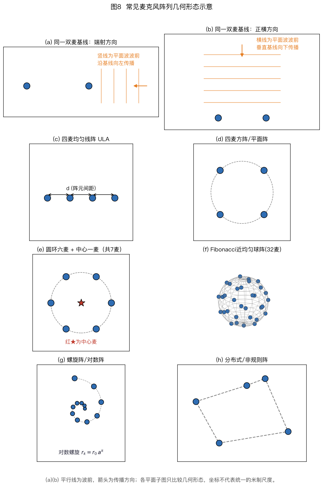
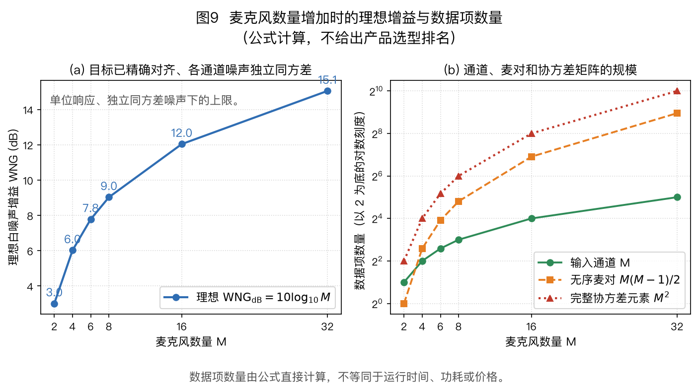
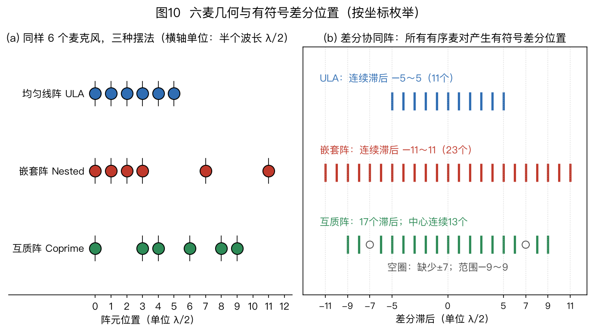
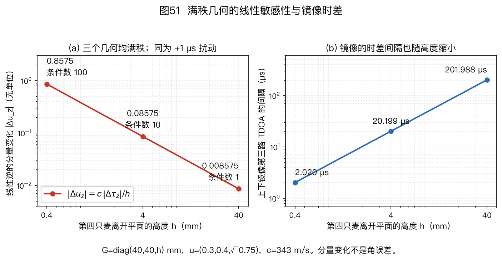
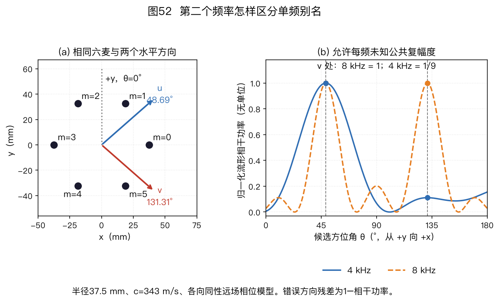

本页目录
⚠️ 本篇是正文第 3 章（正文共 11 章，另有附录 A/B），可独立阅读，前后篇见下方导航。
🏠 首页导读：🏠 导读与导航 ｜ 上一篇：第 2 章 · 声音到达阵列时发生了什么 ｜ 下一篇：第 4 章 · 声源定位（DOA 估计）
3. 阵列几何形态
本章要回答三个问题：麦克风放在哪里，哪些方向会产生不同观测，实际通道误差会怎样破坏这种差别。完成后，应能从坐标算出时延和导向矢量，区分几何镜像与窄带相位混叠，并用一个有条件的数字比较阵列方案。
| 记号或缩写 | 本章含义与单位 |
|---|---|
| $\vec r_m$、$\vec u$ | 第 $m$ 只麦的位置，单位 m；从阵列指向声源的单位方向向量，无量纲 |
| $c,f,\lambda$ | 声速 m/s、频率 Hz、波长 $\lambda=c/f$，单位 m；算例取 $c=343$ m/s |
| $\theta,\varphi$ | 方位角从 $+y$ 朝 $+x$ 为正；俯仰角从水平面向 $+z$ 为正；三角函数代入弧度 |
| 延迟求和（Delay-and-Sum Beamforming，DSB） | 按目标方向补偿相位后平均多路信号 |
| 白噪声增益（White Noise Gain，WNG） | 目标响应平方除以权重平方和，描述独立同方差通道噪声下的信噪比倍率 |
| 到达时间差（Time Difference of Arrival，TDOA） | 两麦到达时刻的有向差，单位 s；$\tau_{ij}=t_i-t_j$ |
| 半功率波束宽度（Half-Power Beamwidth，HPBW） | 目标主瓣两侧功率降到峰值一半的交点间角宽；不存在交点时不强报数值 |
本章沿用傅里叶核 $e^{-\mathrm j2\pi ft}$。麦克风通道、坐标行和导向矢量分量必须按同一顺序排列；以下自由场公式默认同步、全向且通道响应一致。挡板、混响和失配另在对应小节说明。
3.1 形态总览

图8 画出八种常见形态。（a）（b）使用完全相同的一条双麦基线，只把目标方向分别放在端射（endfire）和正横（broadside）两个极限；平行线表示平面波的波前，箭头表示传播方向。这说明“端射/正横”首先描述工作方向相对基线的关系，不是两套不同的双麦硬件。
其余子图依次为均匀线阵（Uniform Linear Array，ULA）、方阵、均匀圆阵（Uniform Circular Array，UCA）加中心麦、按斐波那契球面规则确定性布置的 32 麦近均匀球阵、螺旋阵和分布式非规则阵。
裸露的全向麦克风只有几何位置，不会仅凭排列产生主瓣。（d）的四只麦虽然也落在同一个圆周上，这里按方阵的平面几何分析。
双麦基线的两种典型工作方向（使用的是同一类双麦几何，中间角度同样有意义）：
- 端射工作方向（endfire）：目标位于两麦连线的延长线上。把两麦沿设备的前后方向安装，再配合延时和差分处理，可以形成前方保留、后方抑制的响应；耳机和手机可采用这种布置。
- 正横工作方向（broadside）：目标位于两麦连线的垂直方向。把两麦沿设备的左右方向安装，再配合相应波束形成器，可以把主轴指向设备前方；笔记本和平板可采用这种布置。
从坐标得到方向响应
均匀线阵（ULA）沿 $x$ 轴排列，可写成 $\vec r_m=(md,0,0)^\top$，$m=0,\ldots,M-1$。$d$ 是相邻间距，首末麦的物理孔径为 $(M-1)d$。
水平圆阵的一个坐标构造是 $\vec r_m=(r\cos\alpha_m,r\sin\alpha_m,0)^\top$，其中 $\alpha_m=2\pi m/M$，$r$ 是半径。这里 $\alpha_m$ 是麦克风位置从 $+x$ 起算的几何参数，不能直接当成本书从 $+y$ 起算的声源方位角 $\theta$。相邻弦长为 $2r\sin(\pi/M)$；偶数麦圆环的最大两点间距是 $2r$，奇数麦则小于直径。
三维方向先写成分量，再计算相对传播时延和导向相位：
$$\begin{aligned} \vec u&=\begin{bmatrix} \sin\theta\cos\varphi\\ \cos\theta\cos\varphi\\ \sin\varphi \end{bmatrix},\\ \tau_{m0}&=-\frac{(\vec r_m-\vec r_0)^\top\vec u}{c},\\ a_m(f,\vec u)&=e^{-\mathrm j2\pi f\tau_{m0}}. \end{aligned}\tag{3-1}$$
$\vec r_0$ 是参考麦，故 $\tau_{00}=0$、$a_0=1$。投影为正表示该麦更靠近声源、到达更早，因此相对时延为负，导向相位为正。例如 ULA 的 $d=4$ cm、$\theta=30°$、$\varphi=0°$，第二麦的投影路程为 $0.04\sin30°=0.02$ m，得到 $\tau_{10}=-58.31$ μs；1 kHz 相位为 $+20.99°$。这是坐标与相位符号的自检，非定位算法输出。
坐标整体平移后，$\vec r_m-\vec r_0$ 不变，远场相对导向不变。改变参考麦只会给同一方向的全部分量乘共同相位，也不增加可观测信息。几何的作用在于形成不同基线，波束还需要指定权重；同一阵列可以产生多种响应。
算例 3-1 双麦耳机的差分——1 cm 间距怎么做心形指向
用一个适合解释小型设备的教学模型：两只理想全向麦前后排列、间距 $d=1$ cm，目标沿两麦连线从前方入射。这个间距不是某类耳机的统一规格。配合以下延迟与相减，可构成 §5.3 所述的一阶差分麦克风阵列（Differential Microphone Array，DMA）。
若只把两路信号乘实数增益后相减，即 $y = x_1 - g\,x_2$（$g$ 为实标量），无法形成前后不对称的心形幅度响应。前方与后方来声的麦间相位差分别为 $-\Delta\phi$ 和 $+\Delta\phi$，而 $|1-ge^{-j\Delta\phi}|$ 与 $|1-ge^{+j\Delta\phi}|$ 相等。
前后对称不等于一定是 8 字形。只有等增益相减（$g=1$），且麦间距相对波长足够小时，归一化响应才近似 8 字形；$g=0$ 就是单麦全向响应，$g=0.5$ 时正横方向仍保留幅度 $|1-g|=0.5$，没有 8 字形在该方向的零点。章末 E03-05 可复算这些差别。
要打破这种对称性，需先引入时延再相减：把后路麦的信号延迟 $\tau_0=d/c$，再从前路麦信号中减去：
$$\begin{aligned} y(t)&=x_1(t)-x_2(t-d/c),\\ Y(f)&=X_1(f)-e^{-\mathrm j2\pi fd/c}X_2(f). \end{aligned}\tag{3-2}$$
第二行由时移的傅里叶变换性质得到，见 §2.3。
其中 $x_1$ 是前路麦，$x_2$ 是后路麦，$d/c$ 是声音传播一个麦间距所需的时间。下面分别计算前方和后方来声的响应。
第 1 步：两麦之间的相位差。本算例用 $\Delta\tau$ 表示时差的非负幅值；带符号的 $\tau_{ij}=t_i-t_j$ 仍按 §2.1 定义。声音沿连线方向传来时，两麦时差幅值最大：
$$\Delta\tau=\frac dc=\frac{0.01}{343}\approx29.2\ \mathrm{\mu s}.$$
1 kHz 时对应的相位差（时延在频域就是相位旋转，§2.3）：
$$\begin{aligned} \Delta\phi&=2\pi f\Delta\tau\\ &=\frac{2\pi\times1000\times0.01}{343}\\ &\approx0.183\ \mathrm{rad}\approx10.5°. \end{aligned}$$
第 2 步：后方来声——理想模型下抵消。后方的声音先到后路麦 $x_2$、晚 $\Delta\tau$ 才到前路麦 $x_1$；给 $x_2$ 补上的延迟 $\tau_0=d/c$ 正好等于自然时差，两路在减法器中对齐，理想等幅模型给出 $y=0$。有限精度、通道失配和反射会使实际零陷保持有限深度。
第 3 步：前方来声——还剩多少。前方的声音先到 $x_1$、晚 $\Delta\tau$ 到 $x_2$；$x_2$ 又被电延迟推后 $\Delta\tau$，两路共错开 $2\Delta\tau$，即相位差 $2\Delta\phi \approx 21°$。两路信号是复平面上两个长度相同、夹角 $21°$ 的箭头，相减得到连接两尖端的弦。剩余幅度（两路幅度归一化为 1）：
$$\begin{aligned} |Y|&=|1-e^{-\mathrm j2\Delta\phi}|\\ &=2\sin\Delta\phi\approx0.3643. \end{aligned}$$
这里先用未舍入的 $\Delta\phi=2\pi\times1000\times0.01/343$ 计算，最后才舍入幅度。换算成分贝：$20\log_{10}0.3643 \approx$ −8.8 dB。前方保留而后方出现零陷，低频近似下得到心形指向。只要电延迟与几何时差的关系保持不变，低频归一化波束形状随频率变化较小。
第 4 步：计算输出信噪比变化。与单个麦克风相比，前方信号幅度为 0.3643，对应 −8.8 dB。两路独立自噪声相减后功率相加，噪声功率增加约 3 dB，因此输出信噪比降低约 $8.8+3=11.8$ dB。这是一阶 DMA 在低频 WNG 较低的原因：间距越小、频率越低，$\Delta\phi$ 越小，目标信号在相减中保留得越少。
第 5 步：失配最先伤害哪里。后方零陷靠的是“两路幅度精确相等、相减归零”。若麦 2 的增益是 1.01，后方响应的绝对幅度为 $|1-1.01|=0.01$；相对单麦输入是 $20\log_{10}0.01=-40$ dB。波束图通常将目标方向归一化为 0 dB，这时还要除以失配后的前方响应：
$$\begin{aligned} |B_{\rm front}|&=|1-1.01e^{-\mathrm j2\Delta\phi}|\\ &\approx0.3663,\\ 20\log_{10}\frac{0.01}{0.3663}&\approx-31.3\ \mathrm{dB}. \end{aligned}$$
因此，“约 −40 dB”是以单麦幅度为参考的绝对残差；本算例归一到前方主响应后，零陷约为 −31 dB。两个数的参考量不同，不能混用。增益失配主要限制后方零陷的深度，依赖精确相消的微型差分阵列因此需要通道配对和标定。
从前后两点到整个心形。 用 $\beta$ 表示相对“前端射轴”的夹角，前方为 $0°$、正横为 $90°$、后方为 $180°$。$\beta$ 是本算例的轴夹角，不能与从正横起算的 $\theta$ 混用。令 $p=2\pi fd/c$，后麦相对前麦的自然时延为 $(d/c)\cos\beta$，再加电延迟 $d/c$，所以
$$\begin{aligned} B(f,\beta)&=1-e^{-\mathrm jp(1+\cos\beta)},\\ \frac{|B(f,\beta)|}{|B(f,0)|} &=\frac{|\sin[\tfrac p2(1+\cos\beta)]|}{|\sin p|}\quad(\sin p\ne0),\\ &\xrightarrow{p\to0}\frac{1+\cos\beta}{2}. \end{aligned}\tag{3-3}$$
第二步用了 $|1-e^{-\mathrm jx}|=2|\sin(x/2)|$。归一化只在 $\sin p\ne0$、前方响应非零时有定义：不能直接代入 $p=0$ 或其他 $p$ 为 $\pi$ 的整数倍的频点。最后一步是沿着分母非零的频点令 $p\to0$，分别将小角度的正弦换为其自变量，得到低频心形的全角度表达式。
1 kHz 时，前、正横、后方的归一化幅度约为 $1,0.5021,0$，接近心形的 $1,0.5,0$。上述极限讨论的是归一化形状；频率为零时原始差分输出为零，不能真的除以零响应。
目标方向的 WNG 也可直接复算。用 $G(f)$ 表示线性 WNG；两路权重的模均为 1，平方和为 2，因此
$$\begin{gathered} G(f)=\frac{|B(f,0)|^2}{2}=2\sin^2p,\\ \mathrm{WNG}_{\rm dB}(f)=10\log_{10}G(f). \end{gathered}\tag{3-4}$$
1 kHz 得到 $-11.78$ dB，与第 4 步一致。低频把输出乘以一个较大的均衡系数，虽然能恢复目标幅度，也会等比例放大噪声，不能提高这个 WNG。若要兼顾零陷深度与自噪声，就必须改变设计约束、权重或使用频带，不能只调整播放音量。E03-14 用共同增益导出的数学合成音频展示失配与已知增益补偿。
端射摆法利用延迟与相减形成前后不对称；正横摆法则把主轴放在麦克风连线的垂直方向。
双麦只有 1 个独立时延观测。在已知声源工作平面、并选定时延到角度为单值映射的角域时，它可以估计一维入射角并形成固定波束；仅说“某个平面”或“三维半空间”还不足以排除所有歧义。若要在三维空间同时求方位和俯仰，一个时延方程不够，同一时延对应绕阵列轴的一圈方向，形成锥面模糊。增加阵元并改变几何后，覆盖范围、歧义形式和端射灵敏度也会变化。
多麦形态对比：
读表时先分清三个问题：覆盖说明阵列几何能观测哪些方向，优缺点说明同一几何在哪些条件下容易辨向或失效，典型应用只举安装场景，不代表该形态在应用中总是性能最优。表内“可测方位和俯仰”仍以阵列标定、同步和足够的信噪比为前提。
| 形态 | 覆盖 | 优点 | 缺点 | 典型应用 |
|---|---|---|---|---|
| 均匀线阵（ULA） | 一维 ±90° | 可直接利用平移不变结构；阵元集中在一条轴上，给定阵元数和间距时轴向孔径较大 | 不能由时延单独区分俯仰；靠近端射时 $\mathrm d\tau/\mathrm d\theta$ 趋近 0，角度误差被放大；还存在锥面模糊 | 条形音箱、会议设备 |
| 均匀圆阵（UCA） | 水平 360° | 水平面基线方向较均衡，适合全方位扫描 | 有限阵元只有离散旋转对称，波束仍随频率和转向变化；小半径在低频的电尺寸小；作为平面阵仍有上下镜像，不能仅凭纯时延分辨两侧 | 智能音箱、桌面会议设备 |
| 方阵/平面阵 | 单侧半空间；若两侧都开放则有镜像歧义 | 方位+俯仰都能测 | 阵列平面两侧的镜像方向具有相同时延，需挡板或先验消歧 | 视频会议一体机 |
| 球阵（刚性/开放球） | 全 $4\pi$ 立体角 | 三维覆盖较均匀，可录 3D 声场 | 成本高、体积大；有限阵元下波束仍随频率和方向变化 | 机器人听觉头、3D 录音、学术研究 |
| 螺旋阵/对数阵 | 取决于是否共面；共面时仍有两侧镜像 | 可结合不同基线尺度做宽频带设计，非均匀间距可打散周期性栅瓣 | 设计与宽带优化较复杂；自由场导向矢量仍可按已知坐标计算 | 宽带声源成像或阵列研究 |
| 分布式/随机阵 | 取决于节点坐标张成的维数和工作区域 | 节点跨度可达房间尺度，长基线可提高部分方位的几何灵敏度；多位置观测可提供空间分集 | 节点常有独立时钟和不同声学路径；同步、位置标定、通信和缺包误差可能抵消长基线收益，空间分集也不保证抑制所有多径 | 多节点会议室、机器人网络 |
表中的“一维 ±90°”是以正横方向为零点的平面内角度范围；线阵的三维锥面模糊、平面阵的两侧镜像歧义，都不能只靠这一个范围读出。
例如，会议设备若只需判断桌面周围的水平 360° 方位，可先考虑圆阵；若还要分辨声源在阵列平面上方还是下方，单层圆阵的纯时延观测存在镜像歧义，应增加非共面阵元、挡板信息或场景先验。
跨房间多设备协同是另一类任务：长基线可能改善几何灵敏度，但必须先把跨设备时钟偏移和位置误差纳入预算。这些例子用任务条件筛选结构，并非表中形态的性能排名。
MUSIC 是多重信号分类（Multiple Signal Classification），ESPRIT 是借助旋转不变技术估计信号参数（Estimation of Signal Parameters via Rotational Invariance Techniques）；本章只指出其几何前提，算法见 §4.6。
读表时要区分两种几何歧义。线阵只有沿阵列轴的位置投影信息，因此同一组时延对应以阵列轴为轴的锥面；把麦继续加在同一直线上，能提高阵列增益和估计精度，却不能消除这类锥面模糊。非共线的平面阵能同时估计两个方向余弦，但若阵列两侧都开放，平面法向两侧的镜像方向仍可能产生相同时延，需要挡板、幅度模型或半空间先验消歧。
几何秩、镜像与相位歧义
把相对参考麦的基线逐行写成矩阵 $\mathbf G\in\mathbb R^{(M-1)\times3}$，把有向时延排成 $\vec\tau\in\mathbb R^{M-1}$。式(3-1)给出
$$\mathbf G\vec u=-c\vec\tau,\qquad \|\vec u\|_2=1.\tag{3-5}$$
每行只测量 $\vec u$ 在一条基线上的投影。线阵的 $\mathbf G$ 秩为 1，只固定一个方向分量；若该投影的绝对值小于 1，剩余两分量在单位球上形成一圈方向；投影等于 ±1 时，这个圆才退化为相应的端射单点。
非共线平面阵的秩为 2，固定平面内两个分量，法向分量一般还剩正负两个解；当平面内两分量平方和恰等于 1 时，法向分量为零，两解合并为平面内一个方向。
非共面阵可使秩达到 3，在准确的有向 TDOA 下唯一确定方向向量。唯一性回答有没有不同解，稳定性回答输入稍有变化时解会变多少。 一只麦只比阵列平面高出很小距离时，法向时差依然提供第三个独立约束，却可能小到容易被测量误差影响。因此实际数据还要检查估计向量的长度、残差和条件数。
例如水平阵测得 $u_x=0.3,u_y=0.4$，则 $u_z^2=1-0.3^2-0.4^2=0.75$，上下两解为 $u_z=\pm\sqrt{0.75}$。将更多麦加在同一水平面上，不会使两解的时延不同；加入已知高度的第四麦才会提供法向投影。E03-10 给出完整时延数字。
E03-16 再把第四麦的高度由 40 mm 缩小到 4 mm、0.4 mm：三个布局始终满秩，但无单位约束线性逆的法向分量敏感性依次放大。若平面内投影已经准确，单位长度本身可给出法向分量的绝对值，额外时差还用于判断正负；带噪时不能把线性逆的分量变化直接当成完整方向的角误差。
这里假设已经取得有向传播时差。如果只观测一个频点的相位，相位还会模 $2\pi$ 重复，满秩也不能自动排除这种窄带歧义；§3.2.2 将单独检查它。
端射分辨率下降是另一类问题。对麦 1 位于 $x=0$、麦 2 位于 $x=d$ 的排列，显式使用 $\tau_{12}=t_1-t_2=d\sin\theta/c=-\tau_{21}$，则 $\theta\to\pm90°$ 时导数趋近于零，同样的时延误差会对应更大的角度区间；这与 §2.6 CRB 中 $\cos\theta\to0$ 时下界发散一致。
算例 3-2 端射灵敏度——同一个 10 μs 误差在不同方向的影响
本例沿用有向时差 $\tau_{12}=d\sin\theta/c$；正角时它为正，另一顺序的 $\tau_{21}$ 为负。这里的时差不是算例 3-1 的非负幅值。对弧度角 $\theta$ 求导：
$$\begin{aligned} \frac{\mathrm d\tau_{12}}{\mathrm d\theta} &=\frac dc\cos\theta,\\ \delta\theta&\approx\frac{c\,\delta\tau_{12}}{d\cos\theta}. \end{aligned}\tag{3-6}$$
即：同样的时延误差 $\delta\tau_{12}$，换算成角度误差时要除以 $\cos\theta$。
取 $d = 4$ cm 的线阵（与 §4.4 的例子一致）、时延误差 $\delta\tau_{12} = 10\ \mu s$（16 kHz 采样下为 0.16 个采样间隔，仅作误差预算示例），算两个方向。
正横方向（$\theta = 0°$）：$\cos 0° = 1$，
$$\begin{aligned} \delta\theta&\approx\frac{343\times10\times10^{-6}}{0.04}\\ &\approx0.0858\ \mathrm{rad}\approx4.9°. \end{aligned}$$
10 μs 误差对应约 5° 的角度误差。这也复现了 §4.4“4 cm 间距下 10 μs 误差对应约 5°”的结论。
端射附近（$\theta = 85°$）不能继续把 10 μs 当作“小扰动”。本例最大物理时延是 $d/c\approx116.6$ μs，85° 对应 $\tau\approx116.2$ μs。若估计值增加 10 μs，便超过物理上限，没有实数角度与之对应，系统应当判为越界或把结果限制在端射。
若估计值减少 10 μs，先得到 $\hat\tau_{12}=\tau_{12}-10\ \mathrm{\mu s}\approx106.1743$ μs，再代入反正弦：
$$\begin{aligned} \hat\theta&=\arcsin\!\left(\frac{343\hat\tau_{12}}{0.04}\right)\\ &\approx65.6°. \end{aligned}$$
误差约 19.4°。微分式在足够小的误差下仍说明灵敏度按 $1/\cos\theta$ 增大，但不能把 85° 处的 10 μs 线性外推成 56° 并当作精确误差。实际可用角域由允许误差、信噪比、快拍数和几何共同决定，不存在统一的“端点扣掉 30°”规则。
端射方向的非线性算例说明，阵列灵敏度随入射角变化。下面把几何设计中最常用的四条规律集中列出。
3.2 四条设计规律
以下四条是筛选阵列形态时的检查顺序，不是四种互不相关的性能分数。先看孔径与频带，再看方向覆盖、壳体影响和麦数带来的收益；两道算例随后展示数量级与近似边界。
3.2.1 先看孔径、方向、挡板和麦数
-
常规波束的分辨率尺度由孔径与波长之比决定（约 $\lambda/D$）：7 cm 级圆阵在 1 kHz 的这个尺度已经超过线阵的整个可视角域，方向选择性很弱；到 4 kHz 才进入几十度量级（见算例 3-3）。高频虽然能提供更大的电尺寸，却也更容易遇到空间混叠和阵列失配。设计时必须把这些因素一起考虑。
-
圆阵与线阵各有适用方向：线阵在正横附近投影孔径最大，转向端射时灵敏度下降；圆阵在水平面各方位的几何更均衡。球阵还可提供俯仰信息。哪一种识别率更高，取决于尺寸、挡板、房间、算法和评测方向分布，不能只按阵形下结论。Kumatani–McDonough–Raj《Microphone Array Processing for Distant Speech Recognition》IEEE Signal Processing Magazine 论文，2012（CMU 托管稿）
-
挡板效应必须纳入导向模型：麦克风装在刚性圆柱或球体上时，绕射和散射会改变跨通道的幅相响应。某些频段和方向上，它能增加可辨的幅相差；另一些位置也可能出现阴影或共振。因此应使用相应的解析散射模型或实测阵列流形，不能把挡板一概等效为固定倍数的“虚拟孔径”。
-
麦克风数量没有通用最优值：增加麦克风通常能提高统计稳定性和可控自由度，但收益取决于是否同时增加孔径、噪声相关性、带宽、算法和计算预算。对独立等功率自噪声，目标精确对齐的理想等权 DSB 有线性白噪声增益 $\mathrm{WNG}=M$，对应 $\mathrm{WNG}_{\rm dB}=10\log_{10}M$；麦数翻倍使这个信噪比倍率的分贝值增加约 3 dB。这只是特定噪声模型下的基准，不能单独决定产品所需的麦克风数量。
3.2.2 算例 3-3：6 麦圆环的数字
考虑一个用于教学的 6 麦均匀圆环，环径取 7.5 cm，即半径 $r = 3.75$ cm。这个尺寸只用于展示计算方法，不对应某一款产品；声速取 $c = 343$ m/s。
第 1 步：相邻麦距。6 个麦均匀分布在圆周上，相邻两麦的连线是正六边形的一条边。相邻麦距
$$\begin{aligned} d&=2r\sin(\pi/6)\\ &=2\times0.0375\times0.5\\ &=0.0375\ \mathrm m=3.75\ \mathrm{cm}. \end{aligned}$$
正六边形的边长恰好等于半径——这是 6 麦圆环特有的整齐性质。
第 2 步：相邻间距的保守检查。对均匀线阵，常用的半波长安全线是 $d\le\lambda/2$；若把两端射方向也纳入闭区间，等号仍有一对歧义（§2.6）。圆阵不是一条周期均匀线阵；此处只用相邻弦长做保守检查，先给出容易复算的频率尺度，再核对完整圆阵的导向矢量。代入：
$$\begin{aligned} f_{\rm check}&=\frac{c}{2d}=\frac{343}{2\times0.0375}\\ &\approx4573\ \mathrm{Hz}\approx4.6\ \mathrm{kHz}. \end{aligned}$$
因此，按相邻间距的半波长充分条件，约 4.6 kHz 以下可通过这一保守检查。16 kHz 采样时，4.6～8 kHz 频段不再由这条条件保证；这不表示 4.6 kHz 是圆阵的精确混叠截止频率。
对本例这种理想规则六边形、窄带平面波阵列，更精确的无歧义分析需要比较完整的六维导向矢量，而不能只看一对相邻麦。Tucker、Zhao、Ahmad 与 Potter 的原始研究，Alias-Free Arrays，IEEE Signal Processing Letters 2022，§V-B给出规则六边形在完整单侧方向域上的临界相邻间距 $d=\lambda/\sqrt3\approx0.577\lambda$。本例 $d=3.75$ cm，对应频率 $f=c/(\sqrt3d)\approx5.28$ kHz；临界点存在相位歧义，该值讨论的是理想相位流形的歧义边界，不能据此保证有噪声、混响和通道失配时仍能准确定位。
这个临界值对应阵列平面一侧的完整方向域，其平面内方向余弦覆盖单位圆盘。为严格排除边界歧义，应使用 $d\lt \lambda/\sqrt3$；相切的等号恰好允许某些不同方向给出同一相位向量。原文 §IV 的无歧义条件与 §V-B 的六边形例子基于理想全向阵元，不含通道误差和挡板散射。
怎样自己检查一个方向对？令 $\vec b_m=\vec r_m-\vec r_0$。两个归一化导向完全相同，当且仅当每条基线的相位差都是整周：
$$\frac{\vec b_m^\top(\vec u-\vec v)}{\lambda} \in\mathbb Z\quad\text{对所有 }m.\tag{3-7}$$
这里 $\mathbb Z$ 表示整数集。这个判据比较完整阵列，不只比较一对麦；还必须让 $\vec u,\vec v$ 属于允许的方向域。E03-09 在 8 kHz 明确构造一对水平方向，并逐通道核对相位整周。
阵列平面上下两侧的镜像时延歧义与上述单侧方向域内的窄带相位混叠是不同问题，即使频率低于 4.6 kHz 也仍可能存在。
可选措施包括降低高频子带权重、采用非均匀间距以减弱周期性歧义，以及定位时主要使用无混叠频段、增强时再利用高频信息。
多频比较需要允许源幅度随频率变化。 已知几何与通道响应时，同一方向在不同频点对应不同的相对导向。判断候选方向，不能要求其预测的绝对谱幅与观测相等：声源每个频点本来就可以有不同的未知复幅度。应先在每个频点拟合这个公共复幅度，再检查剩下的跨通道误差；式(3-19)给出这种消元计算。
E03-17 沿用 E03-09 的两个方向，证明它们在 8 kHz 完全重合、在 4 kHz 可分；同时给出两频仍共同混叠的 ULA 反例。多频能否提供新信息取决于实际频率、几何和允许的方向域，不能只数频点的个数。这个比较假定通道响应已知；未知通道相位能否被联合估计，另见 §3.4.1。
第 3 步：波长与孔径的比。阵列孔径（阵列的最大尺寸）$D = 2r = 7.5$ cm。
- 1 kHz：波长 $\lambda = c/f = 343/1000 = 0.343$ m $= 34.3$ cm，孔径比 $D/\lambda = 0.075/0.343 \approx 0.22$——整个阵列只有约五分之一波长大小；
- 4 kHz：$\lambda = 343/4000 \approx 0.0858$ m $= 8.6$ cm，$D/\lambda = 0.075/0.0858 \approx 0.87$——孔径接近一个波长。
第 4 步：先估量级，再算圆环自己的波束。 $\lambda/D$ 在 1 kHz 为约 $4.57$ rad，在 4 kHz 为约 $1.14$ rad。这只能说明前者电尺寸较小、后者方向选择性更强；它既不是圆阵 HPBW 定义，也不能直接借用线阵的 $0.886$ 系数给出精确圆环宽度。
本例使用 §3.1 的圆环坐标、六只麦等权 DSB、水平入射并指向 $\theta_0=0°$，没有图 8（e）的中心麦。波束响应由六个复相位相加：
$$\begin{aligned} \vec u_\theta&=(\sin\theta,\cos\theta,0)^\top,\\ \psi_m&=\frac{2\pi f}{c}\vec r_m^\top (\vec u_\theta-\vec u_{\theta_0}),\\ B(f,\theta;\theta_0)&=\frac1M\sum_{m=0}^{M-1}e^{\mathrm j\psi_m}. \end{aligned}\tag{3-8}$$
每项只含相对于目标方向的剩余相位。$\theta=\theta_0$ 时每项等于 1，故总和除以 $M$ 后为 1。找主峰左右最近的 $|B|^2=1/2$ 交点，再作角度差，就得到该方向主瓣的 HPBW。半功率对应 $10\log_{10}(1/2)=-3.0103$ dB；数值求交不能把严格阈值随意改成 −3 dB。
| 频率 / kHz | $D/\lambda$ | 圆环 HPBW / ° | 可以得出的判断 |
|---|---|---|---|
| 1 | 0.219 | 220.23 | 主瓣超过半周，方向选择性很弱 |
| 4 | 0.875 | 47.31 | 在这组坐标和正横转向下已有几十度主瓣 |
这是本书对式(3-8)的数值求根，完整输入与复算见 E03-08。1 kHz 的半功率半角约为 $110.12°$，所以完整宽度大于 $180°$ 并不矛盾：圆环在整周方位上扫描。不能把这个值与只在 $[-90°,90°]$ 定义单个无镜像角域的 ULA 宽度混用。
这里没有估计两个同时说话人的分辨概率，也没有使用子空间方法。HPBW 描述给定权重的响应；定位误差还取决于信噪比、快拍数、混响和模型失配。不同转向与非均匀权重也需要重新计算。
3.2.3 算例 3-4：ULA 主瓣宽度计算
取一条 4 麦 ULA（等间距直线排列的阵列），间距 $d = 3$ cm，指向正横。首末阵元的物理跨度为 $(M-1)d=9$ cm；§2.6 从离散阵因子推得的窄主瓣近似则是
$$\mathrm{HPBW}\approx\frac{0.886\lambda}{Md}\ \mathrm{rad}.\tag{3-9}$$
这里的 $Md=12$ cm 来自 Dirichlet 核的近似尺度，不等于物理跨度。对小阵列要保留这个区别；该式是式(2-11)在正横方向 $\cos\theta_0=1$ 的形式。
1 kHz：波长 $\lambda = 343/1000 = 0.343$ m。若强行代入窄主瓣近似，会得到 $0.886\times0.343/0.12\approx2.53$ rad，但这个数不是该阵列的 HPBW。直接计算精确阵因子：端射处 $\psi=2\pi d/\lambda\approx0.550$ rad，
$$\left|B(90°)\right|=\left|\frac{\sin(M\psi/2)}{M\sin(\psi/2)}\right|\approx0.821，$$
使用未舍入的幅度 $0.8207696$，得到约 $-1.72$ dB。从 $-90°$ 到 $90°$ 都没有降到 −3 dB，所以本例在 1 kHz 下没有可定义的 −3 dB 主瓣宽度。
8 kHz：波长 $\lambda = 343/8000 \approx 0.0429$ m，
$$\begin{aligned} \mathrm{HPBW}&\approx\frac{0.886\times0.042875}{0.12}\\ &\approx0.317\ \mathrm{rad}\approx18.1°. \end{aligned}$$
这两个结果怎么读：1 kHz 下精确阵因子在可视范围内没有 −3 dB 交点，只能说明波束方向选择性很弱；不能把近似式给出的 145° 当成实际 HPBW。8 kHz 下近似估计约为 18.1°，精确离散阵因子的半功率求交为 18.73°，近似低估约 3.2%。主瓣确实收窄，但小阵列的有限阵元效应仍可看见。只要几何和转向不变，处在窄主瓣近似的适用区间时，频率减半会使 HPBW 约增大一倍。
8 kHz 时 $d/\lambda\approx0.700>1/2$，因此这个阵列不能保证任意转向都无栅瓣。当前正横转向的等高条件要求 $\sin\theta=\pm\lambda/d\approx\pm1.429$，超出物理范围，所以本例没有等高栅瓣；转向 $60°$ 时则可能出现另一个等高方向。频率高、主瓣窄和没有混叠不是同一件事，E03-08 会分别输出这些检查。

图 9（a）在目标精确对齐、各通道噪声独立同方差的条件下，按 $\mathrm{WNG}_{\rm dB}=10\log_{10}M$ 画出理想等权 DSB 白噪声增益的分贝值。（b）分别按 $M$、$M(M-1)/2$ 和 $M^2$ 计算输入通道、无序麦对与完整协方差矩阵的元素数量。右图的纵轴采用以 2 为底的对数刻度。这些数量用于说明数据结构怎样随 $M$ 增长，不等同于具体实现的运行时间、功耗或价格。
§3.3 转向非均匀稀疏阵，说明怎样从差分协同阵构造连续虚拟统计量。
3.3 稀疏阵列与差分协同阵
3.3.1 协同阵的概念：从麦的位置到麦对的间距
均匀线阵若要在包含两个端射方向的闭角域内保证无相位歧义，阵元间距须严格小于半波长；等于半波长时两个端射方向仍重合（§2.6）。在给定麦克风数量下，这一条件限制了物理孔径。
本节的整数网格稀疏阵列（sparse array）先给定一个密集参考网格，再只占用其中部分位置。下文的嵌套阵、互质阵和删减阵都按整数位置及其差分滞后来比较；这种设计可用较少的物理麦克风取得某些原本需要更多阵元才能覆盖的间距。Pumphrey《Design of sparse arrays in one, two, and three dimensions》JASA 论文，1993
广义稀疏阵列设计不要求位置落在预设网格上。 例如 Yan 与 Yang《Synthesis of planar sparse arrays by perturbed compressive sampling framework》IET MAP 论文，2016 在平面天线阵列设计中允许候选阵元位置连续扰动；这说明固定网格是本节算例的约定，而不是所有稀疏阵列的定义。麦克风数量少或位置不均匀，本身也不足以说明差分滞后连续。只有实际位置差覆盖相应网格时，才能补出物理阵列没有占用的连续虚拟位置；虚拟位置数增加不等于物理孔径凭空增加。
核心概念：差分协同阵（difference co-array）。理想远场窄带模型下，协方差矩阵第 $i,j$ 个元素的相位由麦 $i$ 与麦 $j$ 的位置差决定。收集所有麦对的位置差，就得到差分协同阵。
6 麦均匀线阵的位置是 {0,1,2,3,4,5}（单位 $\lambda/2$），不同的有符号滞后是 {0, ±1, …, ±5}，共 11 个。6 麦嵌套阵 {0,1,2,3,7,11} 可得到 {0, ±1, …, ±11}，共 23 个连续滞后（图10）。
这 23 个数是连续的有符号差分滞后，不是 23 路彼此独立的物理快拍。按连续单侧滞后 $0,\ldots,L$ 可组织成 $L+1$ 维虚拟矩阵：均匀例为 6 维，嵌套例为 12 维；具体构造仍要检查模型和矩阵性质。
在模型和秩条件满足时，部分协同阵方法可能估计多于物理麦数的非相干源。可分辨源数仍取决于连续单侧滞后长度、重构方法、平滑后的矩阵维数、信噪比和快拍数，不能直接等同于 23。
还要分清三种长度。物理位置从 0 到 $L$ 的跨度是 $L$；有符号差集从 $-L$ 到 $L$ 的跨度是 $2L$；以 $0,\ldots,L$ 为索引的虚拟协方差所对应的 ULA 孔径仍是 $L$。本例嵌套阵物理跨度本来就是 11，连续虚拟索引让这段孔径可按更密集的二阶统计结构利用，并没有把麦克风移到更远处。
比较布局时固定共同条件。 图 10 的三种布局有不同物理跨度，不能用它们的差集数量直接比较常规波束宽度。本书另取六麦、物理跨度均为 0.11 m、4 kHz、自由场全向远场模型、水平正横转向及每路 $1/6$ 的等权 DSB，按式(3-8)寻找最近的半功率交点。传感器自噪声独立、等功率且与源不相关。
| 同孔径六麦布局，$x$ 坐标 / m | 精确 HPBW / ° | 线性 WNG | $\mathrm{WNG}_{\rm dB}$ / dB |
|---|---|---|---|
| ULA：0、0.022、0.044、0.066、0.088、0.11 | 33.867 | 6 | 7.782 |
| 嵌套：0、0.01、0.02、0.03、0.07、0.11 | 33.869 | 6 | 7.782 |
两行的常规主瓣宽度在本条件下很接近；白噪声增益相同，是因为目标响应为 1、权重平方和同为 $6(1/6)^2=1/6$。连续滞后结构不同，并不必然使等权 DSB 的主瓣大幅改变。这里没有比较旁瓣、混叠角域、有限样本协同阵估计或房间定位误差，不能由这个表推出两种阵列所有任务性能相同。第 3 章补充实验提供这组固定条件复算。
差分集合只给出虚拟位置的候选索引。要把这些位置用于子空间估计，还需要从协方差中构造相应的二阶统计量。
3.3.2 物理协方差怎样给出虚拟滞后
考虑一个固定频点：远场源两两不相关、均值为零；所有通道使用相同理想响应；传感器噪声与源不相关，跨通道独立且方差同为 $\sigma_n^2$。令 $P_k$ 是第 $k$ 个源在参考麦的功率，$\vec b_{ij}=\vec r_i-\vec r_j$ 是基线，$k_f=2\pi f/c$ 是波数、单位 rad/m，则
$$\begin{aligned} R_{ij}&=\sum_{k=1}^{K}P_k e^{\mathrm j k_f\vec b_{ij}^\top\vec u_k}\\ &\quad+\sigma_n^2\delta_{ij},\\ \hat r[\ell]&=\frac1{N_\ell} \sum_{(i,j):p_i-p_j=\ell}\hat R_{ij}. \end{aligned}\tag{3-10}$$
第一行的 $\delta_{ij}$ 在 $i=j$ 时为 1，否则为 0。第二行用于整数网格位置 $p_i$，$N_\ell$ 是具有有符号滞后 $\ell$ 的有序麦对数，$\hat R$ 表示有限样本估计。因此独立等功率通道噪声进入零滞后；源项只依赖位置差。同一滞后的多次观测可以平均，但它们常共享麦克风和同一批源样本，误差未必独立，不能直接声称方差降为原来的 $1/N_\ell$。
若源相干，协方差还含不同源之间的交叉项，通常依赖两个位置各自的值；若通道增益不同或噪声方差不等，也不能直接把所有同滞后元素当作同一总体数值。E03-07 给出相干源反例。
把协方差元素按滞后重排后，可把连续的一段滞后解释为虚拟 ULA 的二阶统计量。它不是原始阵列快拍，因此标准 MUSIC 不能不经处理直接套用。通常还需 Toeplitz 重构、直接协同阵处理或空间平滑，才能形成满足子空间方法要求的虚拟协方差。
例如，取物理阵元位置 $\{0,1,3\}$（单位为半波长），一个正横 $0°$ 源和一个 $+30°$ 源各有单位功率，互不相关，各麦另加功率 $0.1$ 的独立噪声。按 §2.3 的正相位约定，第 $m$ 个导向分量为 $a_m(\theta)=e^{\mathrm j\pi p_m\sin\theta}$。若有符号滞后定义为 $\ell=p_i-p_j$，总体协方差给出
$$\begin{aligned} r[0]&=2.1,&r[1]&=1+\mathrm j,\\ r[2]&=0,&r[3]&=1-\mathrm j,\\ r[-\ell]&=r[\ell]^*. \end{aligned}$$
这些滞后可排列成位置 $\{0,1,2,3\}$ 的 $4\times4$ Toeplitz 矩阵 $T_{ij}=r[i-j]$。本例的特征值为 $0.1,0.1,4.1,4.1$，与两个独立源及正噪声功率一致；虚拟四阵元并不代表物理系统多录到一路独立波形。逐项重排和一个有限样本反例见本章 E03-07。
相干源、宽带混响、有限快拍和有洞差集可能破坏所需统计模型、改变有效秩，或缩短可用连续差集。有限快拍不必然降低矩阵秩，反射也不总是使秩减少；应检查实际统计量，不能只按这些现象的名称判断。有限样本的滞后平均即使由合法的物理样本协方差出发，也不保证直接填成的 Toeplitz 矩阵半正定；构造可供子空间方法使用的虚拟协方差，需要检查秩与半正定性或采用有此保证的专门平滑构造。Pal 与 Vaidyanathan 原论文第 IV 节提出的协同阵空间平滑与任意填表并非同一操作。
可以把它理解为重新整理“麦对间距表”：相同间距的观测合并，不同间距按顺序排成一条虚拟标尺。同一物理跨度上，连续虚拟索引可能比实际麦位置更密集；只有完成统计重构并满足秩条件后，这些滞后才会转化为可用的子空间自由度。

图 10 左侧比较均匀、嵌套和互质三种摆法，横轴单位是半波长；右侧枚举所有有序麦对的位置差，得到有符号差分位置（也称有符号滞后）。均匀阵有 11 个连续滞后，图中的嵌套阵有 23 个连续滞后，图中的互质阵有 17 个不同滞后，覆盖 −9 到 9，但缺少 ±7，连续中心段只有 −6 到 6 的 13 个滞后。它的跨度比均匀例大、比嵌套例小；比较时应明确是哪两行。连续滞后数描述虚拟孔径结构，不应直接写成 MUSIC 可分辨的源数。
这种虚拟观测依赖统计重构和秩条件；差分集合中的空缺、宽带信号和混响都会限制可用自由度。
3.3.3 代价与边界：差分空缺、宽带和混响
协同阵使用的是二阶统计量，需要专门的协同阵 MUSIC、Toeplitz 重构、空间平滑或稀疏重构。差分滞后中的洞还会使可用连续虚拟孔径缩短，插值或矩阵补全又会引入额外假设。
嵌套阵与互质阵最初主要在窄带阵列模型下发展，原始方法见 Pal 与 Vaidyanathan 的嵌套阵论文与 Vaidyanathan 与 Pal 的互质阵论文。
语音宽带、混响和频率相关阵列流形会增加处理难度。因此实际使用前应在目标频带和房间条件下验证，不能只按理论差集长度选型。
稀疏阵与分布式阵不是同一概念。本节的稀疏阵算例只占用参考网格中的部分位置；更一般的稀疏设计也可以连续选择位置。分布式阵由多个独立设备组成，除了几何布局，还要处理节点标定、独立时钟和通信。
上述几何分析默认通道和位置准确。实际系统还需要通过标定减小增益、相位、耦合和位置误差。
3.4 阵列校准：麦克风个个不一样时怎么办
前面的理想公式假设各通道增益和相位一致、阵元位置准确，并忽略壳体散射、声学耦合和电串扰。实际偏差会使导向模型与观测不匹配。本节把常见偏差写进模型，再说明怎样测量和补偿。
3.4.1 增益相位自校准：利用未知声源的多位置观测
先区分已知方向标定与未知方向联合估计。前者用已知几何和校准声源求通道误差；后者还要估计声源方向，必须先问哪些未知量能由观测分开。交替优化即使收敛，也不能替代可辨识性检查。
在一个固定频点，令 $q=1,\ldots,Q$ 表示依次录制的声源场景、$t=1,\ldots,T$ 表示该场景中的帧、$m=0,\ldots,M-1$ 表示通道。这里为简明取每个场景相同的帧数；$\boldsymbol\theta\in\mathbb R^Q$ 存各场景的方向，$\mathbf S\in\mathbb C^{Q\times T}$ 存源复谱，$\vec g\in\mathbb C^M$ 存通道复增益，$\vec x_{qt},\vec n_{qt}\in\mathbb C^M$ 分别是观测和噪声。假设每个场景只有一个远场窄带源，各场景共用不变的通道复增益；把模型和本节使用的未归一化复数残差平方和写在一起：
$$\begin{aligned} g_m(f)&=[1+\Delta g_m(f)]e^{\mathrm j\Delta\phi_m(f)},\\ \vec x_{qt}&=\operatorname{diag}(\vec g)\vec a(\theta_q)s_{qt}+\vec n_{qt},\\ J(\vec g,\boldsymbol\theta,\mathbf S) &=\sum_{q,t,m}|x_{qtm}-g_ma_m(\theta_q)s_{qt}|^2. \end{aligned}\tag{3-11}$$
$\Delta g_m$ 是相对幅度误差、无量纲，且此参数化要求 $1+\Delta g_m>0$；$\Delta\phi_m$ 是相位误差、单位 rad；$s_{qt}$ 是参考处每帧未知的源复谱，$\vec n_{qt}$ 是噪声。逐通道增益构成对角矩阵，尚未包含通道间串扰。相位和增益通常随频率变化，单个频点的修正不能不经检查地用于整个语音频带。
仅由观测，公共源幅度与全部 $g_m$ 的共同复尺度不能分开。相对标定通常选择参考通道，令 $g_0=1$；这表示以参考通道为基准，不表示它已具备绝对声压校准。
固定参考麦仍不能消除线阵的方向—相位斜率歧义。 对间距 $d$ 的均匀线阵，本书以正横为 $0°$ 的导向约定给出 $a_m(\theta)=e^{\mathrm j kmd\sin\theta}$，其中 $k=2\pi f/c$。任选一个使所有新方向仍在可用角域内的共同偏移 $\delta$，令
$$\begin{aligned} \sin\theta'_q&=\sin\theta_q+\delta,\qquad g'_m=g_m e^{-\mathrm j kmd\delta},\\ g'_ma_m(\theta'_q) &=g_m e^{-\mathrm j kmd\delta} e^{\mathrm j kmd(\sin\theta_q+\delta)} =g_ma_m(\theta_q). \end{aligned}$$
这里改动的是每个方向的正弦值，不是把每个角度简单加上同一个度数；$m=0$ 时仍有 $g'_0=g_0=1$。因此，即使录到多个不同的未知方向，只要任意复增益的相位斜率也未知，这两套参数仍会逐帧产生完全相同的无噪声观测。
可用下面的四麦小例子检查：$d=4$ cm、$f=1$ kHz、$c=343$ m/s，原方向是 $[-40°,0°,35°]$，令 $\delta=0.15$，新方向约为 $[-29.524°,8.627°,46.351°]$，均处于 $[-60°,60°]$。同时给第 $m$ 路增益乘上 $e^{-\mathrm j kmd(0.15)}$，第 1 路相位就相对原值改变约 $-6.297°$；两套模型逐样本预测的最大差在本书双精度合成中约为 $7.0\times10^{-16}$。这个差是浮点舍入量级，不是定位误差，也不说明哪一套方向是真值。
跨频约束是否能解除这项歧义，取决于通道模型。 若每个频点都允许任意未知的 $g_m(f)$，则每频都能乘上 $e^{-\mathrm j2\pi fmd\delta/c}$，共同的方向正弦偏移仍能被吸收。增加频点本身没有限制这项自由度。
若有依据认为同一个未知复增益在 $f_1,f_2$ 两频间保持不变，那么两种补偿相位也必须相等，即 $(f_2-f_1)md\delta/c\in\mathbb Z$。ULA 含相邻基线 $m=1$ 时，非零偏移的最小周期为 $c/[d|f_2-f_1|]$。例如 $d=0.04$ m、两频相差 1 kHz，周期为 8.575，大于正弦方向域中任何两点的最大差 2，因此可排除这项非零斜坡。这个结论依赖跨频复增益确实不变；不能用于任意频率响应。
若通道未知量含固定的物理时间偏移 $\epsilon_m$，模型为 $g_m(f)=h_m e^{-\mathrm j2\pi f\epsilon_m}$，则改成 $\epsilon'_m=\epsilon_m+md\delta/c$ 又能在全部频率吸收方向偏移。已知通道响应下的多频方向比较见 E03-17；联合校准还需要可信的外部时钟、相位锚或其他约束。解除这一项歧义，也不等于解除几何镜像和所有空间混叠。
导向矢量 $\vec{a}(\theta)$ 的每个分量都会乘上这个误差，不同通道的相对误差可能使 MUSIC 谱峰变宽或偏移，也可能使波束零陷变浅。若所有通道只有同一个非零复增益，则归一化后的相对流形不变；共同尺度不是方向失配。麦克风阵列实测校准的一个原始例子见 Sachar、Silverman 与 Patterson 2005，IEEE Transactions on Speech and Audio Processing，13(1):42–52。
已知方向时先走通最小二乘。 对某一待校准通道，令 $z_i$ 是由已知方向和可靠参考信号算出的理想复谱，$y_i$ 是该通道实测复谱，$i=1,\ldots,Q$ 标识不同帧或校准条件。模型为 $y_i=gz_i+n_i$，估计问题是
$$\begin{aligned} \hat g&=\underset{g\in\mathbb C}{\arg\min} \sum_{i=1}^{Q}|y_i-gz_i|^2,\\ \hat g&=\frac{\sum_i z_i^*y_i}{\sum_i|z_i|^2}. \end{aligned}\tag{3-12}$$
将平方展开为 $|y_i|^2-gz_iy_i^*-g^*z_i^*y_i+|g|^2|z_i|^2$，收集关于 $g$ 的二次项，最小点满足 $g\sum|z_i|^2=\sum z_i^*y_i$。分母是校准激励能量，必须为正；零能量时应拒绝估计。E03-12 从两个复数观测算出 $\hat g=0.94+0.5\mathrm j$，并逐项核对残差。
原始噪声与拟合残差需要分开。 模型中的 $\vec n=\vec y-g\vec z$ 使用真实增益；拟合残差 $\vec r=\vec y-\hat g\vec z$ 使用估计增益。式(3-12)使 $\vec z^H\vec r=0$，因为最小点已把输入方向上的可拟合部分吸收到系数中；它并不要求有限记录恰好满足 $\vec z^H\vec n=0$。E03-12 显示原始噪声的内积为 −0.3，而拟合残差的内积为零。
这个公式假设 $z_i$ 可视为已知输入。若参考麦本身含显著噪声，直接用带噪 $X_m/X_0$ 或把 $X_0$ 当精确输入会引入误差变量问题，尤其在参考能量很小时容易不稳定。E03-15 用四个等权观测展示：真实增益为 2，带噪输入的最小二乘系数却为 1.6，并且训练残差比代入真增益时更小。重复同一组记录不会改变这个系数。实测需要足够激励、参考噪声模型、多帧统计和独立复测；这些条件不能省略为“数据够多就无偏”。
未知方向不等于完全无锚。 Tashev《Gain Self-Calibration Procedure for Microphone Arrays》ICME 论文，2004，§2–3先估方向，再利用该方向与各路接收能量更新增益；其简化模型把位置视为足够准确，并把通道响应修正简化为增益修正。Weiss 与 Friedlander《Eigenstructure Methods for Direction Finding with Sensor Gain and Phase Uncertainties》，1990，摘要讨论方向与各传感器增益、相位的联合估计。方法名称或论文摘要都不能使上面这个任意复增益 ULA 反例自动消失；必须核对各自的模型和额外约束。
本书的受锚约束教学演示给出一条可运行的最小路径，而非复现上述论文算法。演示入口生成四麦、三个依次录制的单源场景，每场景 48 帧单频复谱；估计实现固定 $g_0=1$，还要求从观测之外独立测得相邻第 1 路相对第 0 路的相位，增益幅度仍由数据估计。角度限制在 $[-60°,60°]$，相邻麦在该角域内不得相位折叠。这个外部相位锚约束住上面的共同相位斜率；如果锚本身错了，数据残差并不能替它纠错。
实现最小化式(3-11)的 $J$：固定增益时先对每帧未知源复谱做最小二乘消元，在角域内用网格和局部搜索更新每个场景的方向；固定方向和源复谱时，再用复数最小二乘更新通道增益，并将第 1 路相位约束在外部测量值上。它记录初始与每轮目标值、轮数和停止状态；目标值停止下降或达到迭代上限，不等于找到全局最优。
运行仓库根目录下的 PYTHONDONTWRITEBYTECODE=1 .venv/bin/python -B -m codes.chapters.ch03.examples.self_calibration_demo 可得到 JSON 数值。本书单次合成以随机种子 307 生成源复谱和复高斯噪声，噪声复数均方根为 $0.005$；外部相位锚取正确的 $0°$ 时，算法在 21 轮后报告收敛，三个真方向 $[-40°,0°,35°]$ 对应的估计约为 $[-39.994°,-0.012°,34.997°]$，未归一化目标值由约 $0.011823$ 降至 $0.011719$。真值只用于事后评分，不作为拟合输入。
反过来，对无噪声的同一信号误设外部相位锚为 $+5°$，算法也报告收敛，估计方向约为 $[-49.631°,-6.840°,27.031°]$，目标值约 $1.1\times10^{-28}$。可见极小残差只能说明模型对数据拟合得好，不能证明相位锚正确或方向无偏。本例没有混响、同时多源、频率相关误差或时钟偏差，也没有设备实测与全局最优保证。
复增益标定处理单通道幅相偏差；跨通道电串扰可在一定线性近似下写成频率相关混合矩阵，壳体散射则通常还随入射方向变化。
3.4.2 互耦补偿：把串音矩阵抵消掉
电路走线或器件间的线性串扰，在近似不随声源方向变化时可写成频率相关矩阵 $\mathbf{C}(f)$，实际导向矢量变为 $\mathbf{C}(f)\vec{a}(f,\theta)$。
壳体绕射和散射直接改变声场，通常应写成方向相关的实测流形 $\vec a_{\rm meas}(f,\theta)$，或在确有依据时用 $\mathbf C(f,\theta)\vec a(f,\theta)$ 表示，不能无条件并入固定 $\mathbf C(f)$。可用已知方向的测量拟合模型，也可直接把实测阵列流形存入系统。
噪声在哪里加入，会改变补偿后的结论。 设 $\vec s$ 是进入混合器之前的理想通道向量，$\vec n_{\rm pre}$ 是混合前噪声，$\vec n_{\rm post}$ 是混合后加入的读出噪声：
$$\begin{aligned} \vec x&=\mathbf C(\vec s+\vec n_{\rm pre}) +\vec n_{\rm post},\\ \mathbf C^{-1}\vec x &=\vec s+\vec n_{\rm pre} +\mathbf C^{-1}\vec n_{\rm post}. \end{aligned}\tag{3-13}$$
精确逆会恢复混合前噪声原有的幅度；它对混合后的噪声则施加逆矩阵。若 $\mathbf C$ 的最小奇异值很小，后置噪声在相应方向被显著放大。条件数衡量相对敏感性，绝对噪声增益还取决于奇异值本身：$0.01\mathbf I$ 的条件数是 1，但其逆仍把后置噪声幅度乘以 100。
一种可复算的折中是带二范数惩罚的最小二乘。$\eta>0$ 为正则化参数，取值与 $\mathbf C$ 的幅度尺度一起解释：
$$\begin{gathered} J(\vec v)=\|\mathbf C\vec v-\vec x\|_2^2 +\eta\|\vec v\|_2^2,\\ \hat{\vec s}=\underset{\vec v}{\arg\min}\,J(\vec v),\\ (\mathbf C^H\mathbf C+\eta\mathbf I)\hat{\vec s} =\mathbf C^H\vec x. \end{gathered}\tag{3-14}$$
实现中解最后一行的线性方程，不必显式形成逆矩阵。对奇异值 $\sigma$，精确逆的系数 $1/\sigma$ 变为 $\sigma/(\sigma^2+\eta)$；小奇异值处的噪声放大受到限制，但信号传递也从 1 变为 $\sigma^2/(\sigma^2+\eta)$，因此存在偏差。
例如 $\mathbf C=\begin{bmatrix}1&0.9\\0.9&1\end{bmatrix}$ 的共模与差模特征值分别为 $1.9$ 和 $0.1$，条件数为 19。对单位方差的独立后置噪声，精确逆后每通道方差约为 50.14；取 $\eta=0.01$ 时约为 12.64，但差模信号幅度也只保留 0.5。E03-11 展开矩阵、噪声协方差与这些数字。
这一例子说明正则化的可量化代价，不规定产品应接受多少串扰，也没有考虑方向相关散射。依赖深零陷的差分或超指向设计通常比常规 DSB 更需要精确的相对通道模型。
耦合矩阵描述通道间混合，但不能替代麦克风坐标标定。位置误差会直接改变传播相位。
3.4.3 位置自标定：有锚测绘、无锚边走边建图
8 kHz 的波长约为 4.3 cm。远场模型下，决定相位的量是位置误差在入射方向上的投影：若参考麦位置不变，另一麦沿该方向偏移 2 mm，相位偏差大小为 $2\pi\times0.002/0.0429\approx0.29$ rad，即约 17°。这是投影长度达到 2 mm 的情形，不能把任意方向的 2 mm 偏移都当成 17°。
更一般地，令相对基线的位置误差为 $\delta\vec b_m=\Delta\vec r_m-\Delta\vec r_{\rm ref}$。在本书正相位导向约定下，保持声源方向与声速不变，相对相位变化为
$$\Delta\phi_m=\frac{2\pi f}{c}\,\delta\vec b_m^\top\vec u. \tag{3-15}$$
这里位置误差用 m，$\Delta\phi_m$ 用 rad；参考麦的误差也要扣除。例如麦沿 x 轴偏移 2 mm，声源从 +y 正横方向入射时投影为零；30° 入射时投影为 1 mm，8 kHz 下约为 8.4°；90° 入射时才约为 16.8°。全部麦位置同时加上同一个平移向量不会改变远场相对导向。低频下同一投影误差造成的相位偏差较小；近场距离与幅度变化需按球面模型另算。
位置标定有两类方法：
- 有锚点标定：在多个已知位置播放信号，由 TDOA 反解麦克风坐标；
- 无锚点自标定：同时估计声源位置与麦克风位置，要求声源运动或多位置观测满足可辨识条件。
无外部锚时，观测至少不能区分整体平移、旋转和镜像；只用方向观测时还可能不能确定尺度。实现中固定参考麦和坐标轴，是选择一个坐标规范，以报告该坐标系中的代表解；它不能单独建立外部世界中的绝对坐标。
若观测本身不能确定尺度，还须加入已知距离；若需要房间世界坐标，则要提供外部锚点或等价约束。这些不唯一性可由距离差对刚体变换的不变性直接验证，属于本书几何分析。
若实际求解 TDOA 自标定，还必须明确发声时刻和接收机时钟是否已知；基于全部绝对传播时间或距离的到达时间（Time of Arrival，TOA）方法，不能直接当作仅有时间差的解法。
Zhayida、Segerblom Rex、Kuang、Andersson 与 Åström 的 2016 年预印本《An Automatic System for Acoustic Microphone Geometry Calibration based on Minimal Solvers》在 §2 明确采用接收麦同步、声源发声时刻未知的条件，§5～6 分别处理时间偏移与几何。它可作为这种特定 TDOA 自标定问题的实现入口；不是任意异步分布式节点的直接解法。固定源码与实际取得/运行边界见空间算法源码研究。
分布式阵列还需同时估计节点时钟关系（§10.2），否则 TDOA 会包含系统偏差。
3.4.4 失配灵敏度表：先坏哪、坏多少
下表汇总不同失配首先影响的量、误差尺度和补偿方法。表中的数值用于比较误差的数量级，不是各种设备的统一验收门限。
| 失配类型 | 示例量级 | 首先受影响的量 | 按该示例计算 | 可采取的措施 |
|---|---|---|---|---|
| 增益失配 | 1%（约 0.1 dB） | 差分/超指向的零陷深度 | 本例后方残差相对单麦幅度为 −40 dB；相对前方单位响应约 −31 dB（§3.1 算例 3-1 第 5 步） | 在受控条件下测量相对增益并补偿 |
| 相位失配 | 2°（高频段） | 高频指向精度 | 2° 相位误差在 8 kHz 约等于 0.24 mm 等效位置误差，MUSIC 峰可能偏移、旁瓣可能抬高 | 同增益，一起标 |
| 位置误差 | 沿入射方向的相对投影误差 2 mm | 高频导向矢量 | 8 kHz 下约 17° 相位误差；1 kHz 下约 2°。后者对常规主瓣可能较小，但在依赖精确相消的零陷中仍可能显著：两路残余幅度约 $2\sin(1°)=0.0349$，相对单路约 −29 dB | 有锚/无锚位置标定 |
| 耦合与壳体散射 | 随结构、频率而变 | 零陷深度、旁瓣电平 | 不能仅由一个间距门槛判断；须比较自由场模型与实测流形 | 使用实测流形，或对已知 $\mathbf C(f)$ 做正则化逆补偿 |
| 时钟漂移（分布式） | 相对采样率误差 50 ppm | TDOA 系统性偏差 | 累计采样数差换算为 0.18 s，口径见表下（§2.1、§10.2） | 共时钟/在线同步补偿 |
50 ppm 一行指两节点之间的相对误差。同一物理时刻的累计采样数差除以标称采样率，得到 $50\times10^{-6}\times3600=0.18$ s；在 16 kHz、1 小时下相应的累计差为 2880 个采样点。
若两个独立晶振各容许 ±50 ppm，一快一慢时相对误差可接近 100 ppm，不能仍按 50 ppm 计算。
若按同一采样索引比较两节点的物理采样时间，50 ppm、标称 1 小时对应的时间差大小为 $0.18/1.00005\approx0.179991$ s；这与累计采样数差的换算口径不同。该表只作数量级分析，不替代设备时钟的温漂与统计测量。
增益失配一行的两个 dB 数有不同分母。−40 dB 是后方残差相对一只麦克风输入幅度的电平；−31 dB 先把前方响应归一到 0 dB，再读后方零陷的相对电平。读波束图时应使用后一个口径，不能把两数当成同一零陷深度。
位置误差造成的相位偏差随频率增大；增益漂移、耦合和噪声则未必遵循同一单调关系。依赖精确相消的零陷和超指向设计通常最敏感。
固定一体式阵列可在受控条件下标定相对通道响应；是否出厂写入补偿系数，取决于具体设备和流程。例如，ADI 的 SigmaStudio 离线麦克风匹配说明只涉及两路输入的电平匹配。
TI 的 TAC5x1x 系列应用说明 SLAAEH6，2024，§1 与图 1-1描述两路模数转换器（Analog-to-Digital Converter，ADC）输入与四路脉冲密度调制（Pulse Density Modulation，PDM）数字麦输入，经 6 路到 4 路的多路选择器（Mux）选择送入输出处理路径。六个候选输入不等于同时输出六路独立采集。器件的增益调整与按调制器时钟周期设置的通道延迟，可用于通道匹配；时间延迟产生的相位随频率变化，不能当成任意频率无关的固定相位旋转。这些具体功能不能直接证明某款设备完成了几何或全频带阵列流形标定。
分布式阵列还需处理节点位置、时钟偏移和采样率漂移，并根据设备移动或时钟变化决定是否在线更新。
一种可核验的工程流程分三步：
- 在受控声场中测各通道的频率响应和阵列流形；
- 把补偿参数写入设备；
- 用若干已知方向复测主瓣、旁瓣和零陷。
若设备结构、温度或节点位置会变化，还要定义重新标定的触发条件。采用逐只通道修正、整机流形查表还是在线联合估计，取决于硬件一致性、存储、算力和使用环境。
标定结果不能只保存一组没有上下文的复数。最小标定记录应包括设备或阵列序列号、麦克风通道顺序、坐标系与长度单位、参考麦克风、采样率、频率网格、复增益或实测流形、测量温湿度、测量日期、算法版本和原始记录校验值。
加载时先核对通道数、设备身份、坐标维度和频率网格；任一项不匹配时应拒绝套用，而不是截断或重排数组。
产线验收还要用未参与拟合的方向复测目标响应、旁瓣或零陷，并把允许误差写成设备规格，而不是沿用某个教学算例的门限。
geometry.py 提供统一的平面波和球面波导向矢量，正角、参考麦克风和声速约定与 §2.1 一致。它是校准前后的共同计算基线，不包含针对某种硬件的自动校准器。对应测试会检查正角时 $\tau_{21}\lt 0$、导向相位为正，以及近场幅度和传播距离；这样可在替换实测流形前先排除坐标轴、通道顺序和傅里叶符号错误。
几何决定可观测的空间信息，标定决定理论模型能否用于实测数据。第 4 章将从 GCC-PHAT 开始介绍声源定位算法。
本章练习
下面六题使用 exercises_spatial.py 复算，检查差分位置、反三角函数边界、角度约定、远场近似误差、双麦相减响应和通道复增益标定。第七题用独立的协同阵脚本，避免把“差集长度”误当作有效虚拟协方差。
E03-01：差分位置相同，观测次数也相同吗？
对位置 $\{0,1,2,3,4,5\}$ 和 $\{0,1,2,3,7,11\}$，枚举全部有序麦对，包括同一麦与自身配对。计算每个差分滞后的重数，并检查重数之和。位置单位为半波长。
参考答案：两种布局都有 $6\times6=36$ 个有序麦对，零滞后的重数均为 6。均匀阵的滞后从 −5 到 5，重数依次为 $1,2,3,4,5,6,5,4,3,2,1$，共 11 个不同位置。
嵌套阵的滞后连续覆盖 −11 到 11，共 23 个；正滞后 1～11 的重数依次为 $3,2,1,2,1,1,1,1,1,1,1$，负滞后与之对称。相同滞后的样本可以平均，但不同麦对可能共享同一通道，不能据重数直接假定它们统计独立，更不能把 23 个差分位置当作 23 路原始录音。对于连续滞后 −11～11，按单侧索引构造的虚拟矩阵是 12 维；能估计的源数还受有效秩、噪声和重构方式限制，不能由 23−1 得出 22 个可分辨源。
E03-02：把越界时延与大角度误差分开
麦 1 位于 $x=0$、麦 2 位于 $x=d=4$ cm，声速 343 m/s；本题观测 $\tau_{12}=-\tau_{21}=d\sin\theta/c$，真角取 0° 和 85°。分别给真实时延加、减 10 μs，用完整反正弦反算；若反正弦输入超出 $[-1,1]$，应如何记录？
参考答案：正横的真实时延为零；先加 10 μs 得到约 +4.92°，再减 10 μs 得到约 −4.92°。85° 时的真实时延约为 116.17 μs；减去 10 μs 后约为 65.57°，增加 10 μs 则超过最大时延 $0.04/343\approx116.62$ μs，无实数方向可解。保留更多位计算，再将角度舍入到两位小数。
代码将越界结果记为 valid=false、角度为 null，不把它悄悄夹到 90°。系统可以另设夹限策略，但必须保留越界标记；夹限输出是恢复动作，不是一次准确的方向观测。
E03-03：同一方向为什么会有两个方位角数字？
已知方向单位向量 $\vec u=[-1/2,-1/\sqrt2,1/2]^\top$。按本书约定——方位角零点为 $+y$、正角转向 $+x$——反算方位角与俯仰角，并将角度重新代回方向向量。再与从 $+x$ 朝 $+y$ 计角的常见数学约定比较。
参考答案：本书使用 $u_x=\sin\theta\cos\varphi$、$u_y=\cos\theta\cos\varphi$、$u_z=\sin\varphi$，因此 $\theta=\operatorname{atan2}(u_x,u_y)\approx-144.74^\circ$，$\varphi=\arcsin(1/2)=30^\circ$。代回后恢复原来的三个分量，双精度程序的最大绝对误差小于 $10^{-14}$。
从 $+x$ 计角时，$\alpha=\operatorname{atan2}(u_y,u_x)\approx-125.26^\circ$；它与本书的关系是 $\theta=90^\circ-\alpha$，再将角度折回选定的 $360^\circ$ 区间。两者描述同一方向，不能混用数值与导向模型。NumPy 的 atan2 文档明确规定第一个参数通常对应纵坐标、第二个对应横坐标；函数不会替调用者选择本书的角度零点。
E03-04：球面波何时足够接近平面波？
三只麦位于 $(-0.05,0)$、$(0,0)$、$(0.05,0)$ m，中心麦作参考，声速为 343 m/s。声源方向为本书方位角 $30^\circ$，距中心分别为 0.2、0.5、2、20 m。用真实距离差与平面投影分别计算相对时延，比较三通道时延误差的均方根，并换算为 4 kHz 的相位误差。
参考答案：声源位置为 $(r/2,\sqrt3r/2)$，真实距离为 $d_m=\sqrt{r^2-2rx_m\sin30^\circ+x_m^2}$，相对时延为 $(d_m-r)/343$；平面近似为 $-x_m\sin30^\circ/343$。在 $r=0.2$ m 时，真实相对路程约为 $[29.129,0,-19.722]$ mm，平面模型为 $[25,0,-25]$ mm。
三通道误差先平方、取平均再开方；参考麦的零误差也计入分母 3。相位误差采用未绕回的 $360f\Delta\tau$，不能先折回 $[-180^\circ,180^\circ)$ 再比较模型。
| 声源距离 / m | 时延误差均方根 / μs | 4 kHz 相位误差均方根 / ° |
|---|---|---|
| 0.2 | 11.28 | 16.24 |
| 0.5 | 4.47 | 6.44 |
| 2 | 1.12 | 1.61 |
| 20 | 0.11 | 0.16 |
近场还存在幅度差。在 0.2 m 处，以中心麦归一化的幅度约为 $[0.8729,1,1.1094]$，并非全为 1。距离增大时，本例的相位和幅度都逐渐接近平面模型；是否可以忽略误差取决于频带与容差，不能把表中的某个距离当作所有阵列的统一边界。这是本书自由场几何计算，未模拟反射、挡板或麦克风指向性。
E03-05：前后对称为什么不一定是 8 字形？
两个理想全向麦间距 1 cm，声速 343 m/s，频率 1 kHz。先计算不加电延迟的 $y=x_1-gx_2$，分别取 $g=0,0.5,1$，比较前端射、后端射和正横的幅度。再令 $g=1$，给后路增加 $d/c$ 延迟，比较两个端射方向。
参考答案：令 $p=2\pi fd/c\approx0.18318$ rad。不加电延迟时，两个端射方向幅度相同，平方均为 $1+g^2-2g\cos p$；正横幅度为 $|1-g|$。按未舍入的 $p$ 计算，最后保留四位小数：
| 实增益 $g$ | 前端射幅度 | 后端射幅度 | 正横幅度 |
|---|---|---|---|
| 0 | 1.0000 | 1.0000 | 1.0000 |
| 0.5 | 0.5165 | 0.5165 | 0.5000 |
| 1 | 0.1829 | 0.1829 | 0.0000 |
只有最后一行在正横有零点。额外给后路延迟 $d/c$ 后，前方响应为 $|1-e^{-\mathrm j2p}|=2\sin p\approx0.3643$，后方为 0。相对于单麦的幅度尺度保持不变，不分别把每行归一化到峰值。
本题展示增益和延迟怎样改变理想模型的对称性，不是实测零陷深度。有限通道失配、反射与高频下的小间距近似误差仍须单独验证。
E03-06：方向误差还是通道相位误差？
两只同步麦克风位于 $x_1=0$、$x_2=d=8.575$ cm，声速为 $343$ m/s，频率为 $1$ kHz。按 §2.3 的约定，麦 1 是参考通道；麦 2 有未知但在两次观测间不变的相对复增益 $g$。
用两个方向已知的窄带校准声源，分别置于 $+30°$ 与 $-30°$。设源在麦 1 的复幅度为 $b_\theta$，测得两麦复谱之比 $q_\theta=X_2/X_1$ 分别为 $1.2e^{\mathrm j75°}$ 和 $1.2e^{-\mathrm j15°}$。
先根据方向求两次理想导向比 $a_2/a_1$，再分别由 $q_\theta$ 算出 $g$。如果误把 $g$ 当成 1，只凭 $+30°$ 那次测得的相位反算方向，会得到多少度？最后说明为什么一条方向未知的观测不能同时确定方向与通道相位误差。先手算，再运行 E03-06；本题没有录音噪声、房间反射或设备漂移。
参考答案：几何相位。 $d=\lambda/4$，故 $\psi(\theta)=2\pi fd\sin\theta/c=(\pi/2)\sin\theta$。两已知方向的几何相位分别为 $+45°$ 和 $-45°$，理想导向比分别为 $e^{\mathrm j45°}$ 和 $e^{-\mathrm j45°}$。$q_\theta$ 中的公共源幅度 $b_\theta$ 已经约掉，不要求两次播放同样响。
参考答案：复增益与错误角度。 两次计算都得到 $g=q_\theta/(a_2/a_1)=1.2e^{\mathrm j30°}=1.03923+0.6\mathrm j$。将麦 2 除以这个复增益后，相对相位回到 $\pm45°$。若忽略相位校准，把测得的 $75°$ 全当作几何相位，则 $\sin\hat\theta=75°/90°=5/6$，得到 $\hat\theta\approx56.44°$，相对真实 $30°$ 偏了约 $26.44°$。
参考答案：可辨识边界。 仅有第一条方向未知的 $q=1.2e^{\mathrm j75°}$ 时，$(\theta=30°,\arg g=30°)$ 和 $(\theta=0°,\arg g=75°)$ 都能解释它，幅度同为 $1.2$。本题一个方向已知的无噪声观测其实足以求双麦相对复增益；第二个已知方向用于检查“复增益不随方向变化”这一假设。
若声源方向未知，仅增加任意方向的观测而不加几何、频率或校准约束，也不能保证唯一分开方向和相位误差。实测中壳体散射可能使误差随方向变化，需按 §3.4 测量阵列流形，不能用这一个固定 $g$ 外推。
E03-07：从三麦协方差构造虚拟四阵元统计量
物理位置为 $p=\{0,1,3\}$，单位为半波长。两个互不相关的远场窄带源分别在 $0°$ 和 $+30°$，各有单位功率；独立通道噪声功率为 $0.1$。按 $a_m(\theta)=e^{\mathrm j\pi p_m\sin\theta}$、$R_{ij}=E[X_iX_j^*]$ 和 $\ell=p_i-p_j$，先算有符号滞后 $r[0],r[\pm1],r[\pm2],r[\pm3]$，再按 $T_{ij}=r[i-j]$ 写出连续位置 $0,1,2,3$ 的虚拟 Toeplitz 矩阵，检查共轭对称、特征值与物理通道数。
参考答案：总体协方差。 两个导向矢量是 $[1,1,1]^\top$ 和 $[1,\mathrm j,-\mathrm j]^\top$。例如 $R_{10}=1+\mathrm j$，因为 $p_1-p_0=1$；$R_{21}=0$，因为相应滞后为 2、两个源的相位项相消。因此 $r[0]=2.1$，$r[1]=1+\mathrm j$，$r[2]=0$，$r[3]=1-\mathrm j$，负滞后由共轭得到。
$$\mathbf T=\begin{bmatrix} 2.1&1-\mathrm j&0&1+\mathrm j\\ 1+\mathrm j&2.1&1-\mathrm j&0\\ 0&1+\mathrm j&2.1&1-\mathrm j\\ 1-\mathrm j&0&1+\mathrm j&2.1 \end{bmatrix}\text{。}$$
它等于两个四维导向矢量的外积之和加 $0.1\mathbf I$。这两个向量彼此正交、平方范数均为 4，故特征值是 $4.1,4.1,0.1,0.1$；四维只是二阶统计量的索引长度，物理录音仍只有三路。
参考答案：有限样本反例。 改取一次物理快拍 $\vec x=[1,0,1]^\top$，样本协方差 $\vec x\vec x^H$ 的特征值为 $2,0,0$，是合法半正定矩阵。按相同滞后平均，$r[0]=2/3$、$r[\pm3]=1$、其余滞后为零；直接填成的 $4\times4$ Toeplitz 矩阵有特征值 $5/3,2/3,2/3,-1/3$，已不再半正定。
不能把这种任意填表直接交给 MUSIC 当作有效协方差；要检查矩阵性质，或采用文献中有半正定保证的协同阵空间平滑构造。
空间平滑并不是把负特征值随手删掉。 对上述四维 Toeplitz 矩阵，令 $\vec t_q$ 为第 $q$ 列，把各列的外积相加，可构造
$$\begin{aligned} \mathbf R_{\rm ss} &=\frac14\sum_{q=0}^{3}\vec t_q\vec t_q^H\\ &=\frac14\mathbf T\mathbf T^H. \end{aligned}\tag{3-16}$$
它等价于对按 −3～3 排列的连续滞后向量取四个长度为 4 的重叠片段，再求外积均值。片段内部保持原顺序；四个片段恰好对应 $\mathbf T$ 从最后一列到第一列，改变求和项的次序不改变外积之和。任意向量 $\vec v$ 都有 $\vec v^H\mathbf R_{\rm ss}\vec v=\|\mathbf T^H\vec v\|^2/4\ge0$，所以该构造半正定。此例 $\mathbf T$ 为厄米矩阵，特征向量保持不变、特征值变为原值平方后除以 4，得到 $25/36,1/9,1/9,1/36$。
这不证明有限样本误差已经消失，也不是恢复了原始麦信号。若 $X$ 用 V 表示，直接滞后矩阵 $\mathbf T$ 的单位为 V²，$\mathbf R_{\rm ss}$ 的单位则为 V⁴；两者不能直接把特征值当作同一种声功率来比较。固定版 doatools 的 CoarrayACMBuilder1D分别提供直接重排与空间平滑模式，调用时应明确模式；原始方法和构造条件见 Pal 与 Vaidyanathan 2010 第 IV 节。
相干源为什么不能按同一滞后直接解释？ 另取物理 ULA 位置 $p=\{0,1,2\}$、两个方向仍为 $0°$ 与 $30°$，但两源现在播放同一个单位功率复波形，且没有噪声。两个导向向量相加得到 $\vec v=[2,1+\mathrm j,0]^\top$，所以 $\mathbf R=\vec v\vec v^H$。同为滞后 1 的两个元素变成 $R_{10}=2+2\mathrm j$、$R_{21}=0$，已经不是同一个总体值。把它们平均不能恢复“两个互不相关源各有单位功率”的模型。
先手算这些外积与滞后，再运行 E03-07 原例与第 3 章补充实验核对原例、平滑对照和相干反例。这些都是窄带统计计算，没有生成四通道声音，也没有证明三只麦在任意 SNR 或快拍数下都能分辨四个声源。
下面 E03-08～17 使用同一个补充实验入口：
.venv/bin/python -m codes.chapters.ch03.chapter03_experiments
题干与答案中未特别说明的声速均为 343 m/s。浮点复算保留中间精度，表格最后舍入；没有输入随机噪声的例子，不报告定位准确率或实测信噪比。
E03-08：精确半功率宽度与孔径近似相差多少？
比较两个阵列：四麦 ULA 的坐标为 $(0,0),(0.03,0),(0.06,0),(0.09,0)$ m；六麦圆环的半径为 0.0375 m，坐标按 $r(\cos m\pi/3,\sin m\pi/3)$，$m=0,\ldots,5$。均使用等权 DSB、指向 $\theta_0=0°$，全向理想通道、远场水平入射。
分别在 ULA 的 1、8 kHz 和圆环的 1、4 kHz 求主峰两侧最近的半功率交点。ULA 的扫描域为 $[-90°,90°]$，圆环按整周扫描。再检查 ULA 8 kHz 转向 $60°$ 时是否有等高栅瓣。
参考答案：交点的定义与算法。 对每个候选方向，先将每路相对于目标的剩余相位代入式(3-8)，求复数均值，再取模平方。由主峰向两边搜索首次跨过 $1/2$ 的区间，最后在该区间二分求根。没有跨越时返回“无交点”，不能返回扫描域宽度或继续套窄主瓣公式。
| 阵列 | 频率 / kHz | 精确 HPBW / ° | 线阵窄主瓣近似 / ° |
|---|---|---|---|
| 四麦 ULA | 1 | 无交点 | 145.10，仅为超出适用条件的代入值 |
| 四麦 ULA | 8 | 18.73 | 18.14 |
| 六麦圆环 | 1 | 220.23 | 不适用 |
| 六麦圆环 | 4 | 47.31 | 不适用 |
ULA 1 kHz 的端射功率仍为 0.673663，约 −1.7156 dB，解释了为什么没有半功率交点。8 kHz 的近似宽度比精确值小约 $(18.73-18.14)/18.73\approx3.2\%$；比例计算应使用未舍入值。
参考答案：窄主瓣仍可能伴随栅瓣。 ULA 的等高条件为 $\sin\theta=\sin\theta_0+q\lambda/d$，$q$ 为非零整数。正横时 $\lambda/d=1.42917$，没有非零 $q$ 留在 $[-1,1]$。转向 $60°$ 时取 $q=-1$，得到 $\sin\theta\approx-0.56314$，即另一个约 $-34.27°$ 的等高响应。主瓣宽度与全角域歧义必须分开检查。
本题没有同时声源、混响或误差模型；这些宽度不是定位精度，也不是说话人分离成功率。圆环加中心麦、改权重或改转向后，应重新计算。
E03-09：六个通道一起比较，仍会有完全相同的相位吗？
沿用 E03-08 的六麦圆环、参考麦为 $(r,0)$。先求 $f_*=c/(\sqrt3r)$，检查在临界频率下的水平 $\theta=0°$ 与 $180°$。再在 8 kHz 构造两个不同水平方向，使完整六维相对导向相同。
参考答案：临界点。 $f_*=343/(\sqrt3\times0.0375)\approx5280.83$ Hz。这时 $\lambda_* =\sqrt3r$，两方向的差为 $(0,2)$；各麦的 $y$ 坐标只有 $0,\pm\sqrt3r/2$，因此相位整周数为 $0,\pm1$，满足式(3-7)。等号确实有歧义，所以严格无歧义条件必须排除它。
参考答案：8 kHz 的显式方向对。 令
$$\begin{aligned} b&=\frac{\lambda}{\sqrt3r}\approx0.66010381,\\ a&=\sqrt{1-b^2}\approx0.75117439,\\ \vec u&=(a,b,0)^\top,\qquad \vec v=(a,-b,0)^\top. \end{aligned}$$
两向量长度均为 1。它们的方位分别为 $\operatorname{atan2}(a,b)\approx48.69221°$ 和 $\operatorname{atan2}(a,-b)\approx131.30779°$。方向差只有 $y$ 分量 $2b$，因此每条基线的投影差除以波长仍是整数。逐通道比较相对导向，差异仅为浮点舍入量级。
这对方向本来就在同一个水平面；这里的歧义与上下镜像无关。单一 8 kHz 相位不能区分它们，也不能靠增加该频点快拍数改变完全相同的理想流形。加入其他频率、非共周期基线或方向相关实测响应可能增加区分信息，但要按新模型重新验证。
在本题中心再加一只理想全向麦，也不能区分这对方向：其相对于圆心的几何相位都为零，而参考顶点沿 $x$ 的投影也相同。因此图 8 的六麦圆环加中心麦，不能仅凭“多一只麦”就宣称消除本题歧义。
把 8 kHz 信号穿过一个挡板不意味着自动消歧。挡板改变的是频率和方向相关幅相响应，必须把它纳入测量或解析模型，才能判断是否真的破坏了这对方向的等价关系。
E03-10：平面阵增加一只麦，什么时候能分清上下？
三只麦位于 $(0,0,0),(0.04,0,0),(0,0.04,0)$ m，以第一只为参考。候选方向为 $(0.3,0.4,\sqrt{0.75})$ 与 $(0.3,0.4,-\sqrt{0.75})$。分别计算相对到达时延。然后增加第四只麦 $(0,0,0.04)$ m，重复计算。
参考答案：平面阵。 两条非零基线的投影都是 0.012 m 与 0.016 m，与 $u_z$ 无关。按 $\tau=-\vec b^\top\vec u/c$，两个候选方向都给出 $[-34.9854,-46.6472]$ μs。矩阵 $\mathbf G$ 的秩是 2，更多共面麦只能补充平面内约束。
参考答案：非共面阵。 新基线的投影为 $\pm0.04\sqrt{0.75}$ m，相对时延分别为 $-100.9942$ μs 与 $+100.9942$ μs。现在三条基线线性独立，秩为 3；在准确有向时延模型中，两方向可区分。
还需检查测得的方向余弦是否合法。例如平面解若为 $u_x=0.9,u_y=0.8$，则 $u_x^2+u_y^2=1.45>1$，不存在实数 $u_z$。不要把负数开根号后静默改成零；应标记不符合单位方向模型，再检查时延、坐标、声速或噪声。
本题使用传播时差而非单频相位。非共面并不自动保证任意频率无相位混叠，也不保证受噪声时误差足够小。
E03-11：互耦矩阵可逆，为什么补偿后噪声仍然很大？
已知 $\mathbf C=\begin{bmatrix}1&0.9\\0.9&1\end{bmatrix}$，观测 $\vec x=\mathbf C\vec s+\vec n$，其中 $\vec n$ 是混合之后加入的独立单位方差噪声，$E[\vec n\vec n^H]=\mathbf I$。比较精确逆与式(3-14)中 $\eta=0.01$ 的正则化解。输入与矩阵均为本书示意模型，不是某款设备的串扰测量。
参考答案：先换到两个简单方向。 共模单位向量 $[1,1]^\top/\sqrt2$ 的特征值是 1.9，差模 $[1,-1]^\top/\sqrt2$ 的特征值是 0.1。因此条件数为 $1.9/0.1=19$，精确逆在两个方向的系数分别为 $1/1.9$ 和 10。
换回每个物理通道，输出噪声方差是两个模态方差各占一半：
$$\frac12\left[\left(\frac1{1.9}\right)^2+10^2\right] \approx50.13850.$$
参考答案：正则化。 两个逆滤波系数改为 $1.9/(1.9^2+0.01)\approx0.524862$ 与 $0.1/(0.1^2+0.01)=5$。每通道噪声方差因此为 $(0.524862^2+5^2)/2\approx12.63774$。
但信号也改变了。共模传递为 $1.9\times0.524862\approx0.997238$，差模为 $0.1\times5=0.5$。降低的噪声伴随着差模幅度减半，不能只报告方差下降就称为无失真改进。
若噪声模型改成 $\vec x=\mathbf C(\vec s+\vec n)$，精确逆后的噪声就是原来的 $\vec n$，每通道方差仍为 1。两种位置的噪声不能共用同一个放大量；若两种噪声同时存在，应按式(3-13)分别传播协方差。
E03-12：从两次复数观测手算一个通道标定系数
可靠的已知输入为 $\vec z=[1,2\mathrm j]^\top$，真实通道增益为 $g=1+0.5\mathrm j$。两次观测分别加入误差 $\vec n=[0.1,-0.2\mathrm j]^\top$，因此测得 $\vec y=[1.1+0.5\mathrm j,-1+1.8\mathrm j]^\top$。按式(3-12)估计增益，求两个残差和残差平方和；再解释 $\vec z=0$ 时如何处理。
参考答案：分母与共轭不能省。 输入能量为 $|1|^2+|2\mathrm j|^2=1+4=5$。分子为
$$\begin{aligned} \sum_i z_i^*y_i &=(1.1+0.5\mathrm j) +(-2\mathrm j)(-1+1.8\mathrm j)\\ &=4.7+2.5\mathrm j. \end{aligned}$$
所以 $\hat g=(4.7+2.5\mathrm j)/5=0.94+0.5\mathrm j$。第二项乘的是 $z_2^*=-2\mathrm j$；忘记共轭就会得到另一个错误问题。
预测值为 $[0.94+0.5\mathrm j,-1+1.88\mathrm j]^\top$，拟合残差 $\vec r=\vec y-\hat g\vec z=[0.16,-0.08\mathrm j]^\top$，平方和为 $0.16^2+0.08^2=0.032$。
参考答案：原始误差与拟合残差的两种内积。 题干加入的原始误差是 $\vec n=[0.1,-0.2\mathrm j]^\top$，它与输入的内积为
$$\vec z^H\vec n=0.1+(-2\mathrm j)(-0.2\mathrm j)=-0.3.$$
由 $\vec y=g\vec z+\vec n$ 代入式(3-12)，增益误差为 $\hat g-g=(\vec z^H\vec n)/(\vec z^H\vec z)=-0.3/5=-0.06$。有限观测的原始误差并非恰好正交，所以不会自动返回真值。
拟合残差则满足 $\vec z^H\vec r=0.16+(-2\mathrm j)(-0.08\mathrm j)=0$。这是本题最小二乘最优点的正交条件，与原始误差内积不为零并不矛盾。不能用“残差和输入正交”证明估计增益等于真实物理增益。
零激励时分母为零，没有任何信息能区分候选 $g$，代码应拒绝估计。很弱的激励也会使相对误差敏感；本题没有对带噪参考、源方向未知或随方向变化的壳体响应作通用校准。得到一个非零系数后，还应在未参与拟合的方向与频点复测。
E03-13：互质阵有 17 个滞后，为什么虚拟矩阵不能直接取 9 维？
图 10 的互质阵位置为 $\{0,3,4,6,8,9\}$，单位为某个固定设计频率的半波长。枚举全部 36 个有序麦对，求不同滞后集合、重数、缺失位置与连续中心段。和六麦 ULA、六麦嵌套阵比较物理跨度及可直接填成的连续虚拟矩阵维数。
参考答案：集合与空缺。 正滞后为 $\{1,2,3,4,5,6,8,9\}$，零滞后加上其负值，一共 $1+2\times8=17$ 个；完整 −9～9 范围中的 ±7 缺失。零滞后重数为 6，正滞后 1、2、3、4、5、6、8、9 的重数依次为 $2,2,3,2,2,2,1,1$，连同对称负滞后总数仍为 36。
| 六麦布局 | 物理跨度 / 网格单位 | 不同有符号滞后数 | 连续中心段 | 无补洞的虚拟矩阵维数 |
|---|---|---|---|---|
| ULA：0、1、2、3、4、5 | 5 | 11 | −5～5 | 6 |
| 嵌套：0、1、2、3、7、11 | 11 | 23 | −11～11 | 12 |
| 互质：0、3、4、6、8、9 | 9 | 17 | −6～6 | 7 |
9 维 Toeplitz 矩阵需要 −8～8 的全部滞后，包括缺失的 ±7，不能按“17 个位置等于两侧各 8 加零”来填矩阵。若补洞，就必须给出矩阵补全、稀疏重构或其他额外假设，并另行验证。
网格单位绑定一个设计频率；固定麦克风的物理坐标不会随语音频率改变。跨频率融合不能把不同频率各自的半波长索引直接堆在一起当成同一阵列。
E03-14：1% 增益误差怎样变成后方残留？
本题生成四个可试听文件。两只麦间距 1 cm，采样率 16 kHz，时长 2 s，共同基准传播延迟 $b=2$ ms。前方信号 $F$ 为幅度 0.25 的 1 kHz 纯音，源端区间为 $[0.1,0.7)$ s；后方信号 $B$ 为幅度 0.25 的 1.6 kHz 纯音，区间为 $[0.9,1.5)$ s，两个源都加 10 ms 线性淡入淡出。它们是分时播放的数学正弦，不是真实语音，也不构成双讲。
令 $\tau=d/c$、后麦实际增益为 1.01，连续时间模型为
$$\begin{aligned} x_1(t)&=F(t-b)+B(t-b-\tau),\\ x_2(t)&=1.01[F(t-b-\tau)+B(t-b)]. \end{aligned}$$
未校正输出为 $x_1(t)-x_2(t-\tau)$；校正输出为 $x_1(t)-x_2(t-\tau)/1.01$。延时通过连续源函数在对应时刻求值，没有运行分数延迟估计器或插值器。这里 1.01 是仿真真值，不是从录音自动估出的系数。
双麦观测是双声道文件，通道按麦 1、麦 2 顺序保存上述输入。
目标参考是单声道文件，只含理想前方差分输出 $F(t-b)-F(t-b-2\tau)$。
增益失配输出是单声道文件，直接使用后麦观测延迟后相减。
已知增益校正输出是单声道文件，先将后麦除以 1.01，再延迟相减。
参考答案：稳定段计算。 只在前段 $[0.15,0.65)$ s 和后段 $[0.95,1.45)$ s 测量，避开包络与传播边界。四文件使用共同导出增益 1，不分别归一化。1 kHz 理想前方幅度相对输入为 $2\sin(2\pi\times1000\times0.01/343)=0.364321$，所以目标输出幅度约为 $0.25\times0.364321=0.091080$。
令 $p=2\pi\times1000\times\tau$，失配后的前方比为 $|1-1.01e^{-\mathrm j2p}|\approx0.3663$。后方对齐后仍剩 $|1-1.01|=0.01$ 倍输入，即幅度 0.0025，相对一只麦的后方输入是 −40 dB。这个后方纯音频率与前方不同，因此不能把跨段幅度比称为同一频率波束图的前后比；同频率 −31.3 dB 零陷口径见算例 3-1。
参考答案：浮点生成值与实际 PCM 分开核对。 补充实验入口真实读取上述四个已发布 WAV，核对主清单中的生成源及 WAV 摘要、16 kHz、每通道 32000 点和共同增益 1。前、后评分区间分别为 $[2400,10400)$、$[15200,23200)$，每段分母均为 8000 点。对该段频率拟合余弦与正弦系数，取两系数平方和的平方根作为幅度，不把整个段的混合功率当作纯音幅度。
| 输出与评分段 | 合成浮点幅度 | PCM 实读幅度 |
|---|---|---|
| 目标参考／理想校正，前段 1 kHz | 0.09108024 | 0.09107869 |
| 增益失配输出，前段 1 kHz | 0.09156864 | 0.09156944 |
| 增益失配输出，后段 1.6 kHz | 0.00250000 | 0.00249743 |
| 目标参考／理想校正，后段 1.6 kHz | 0／浮点舍入量级 | 0 |
浮点生成的校正输出与目标参考全段最大绝对差约为 $2.8\times10^{-17}$；两文件 PCM 重读的对应采样值完全相同。这是本题真值增益与确定性源模型的结果。有限噪声、温漂、方向相关响应与估计误差都未进入本题，不能据此宣称产品可实现无限深零陷。先调低音量再试听；读回与浏览器加载不等于标准主观评价。
E03-15：参考麦带噪时，残差更小为什么仍会标错？
把一个真实通道增益为 $g=2$ 的系统写成 $y_i=2s_i$；输出暂不加噪声。校准者无法直接取得干净输入 $s_i$，只能测得带噪参考 $z_i=s_i+e_i$。用下面四个等权观测按式(3-12)估计增益。
| 观测 $i$ | 干净输入 $s_i$ | 参考噪声 $e_i$ | 可用参考 $z_i$ | 输出 $y_i$ |
|---|---|---|---|---|
| 1 | 1 | 0.5 | 1.5 | 2 |
| 2 | 1 | −0.5 | 0.5 | 2 |
| 3 | −1 | 0.5 | −0.5 | −2 |
| 4 | −1 | −0.5 | −1.5 | −2 |
所有幅度采用相同的示意单位，通道增益无量纲。求 $\hat g$、拟合残差及平方和，检查参考与拟合残差是否正交；再将真实增益 2 直接乘可用参考 $z$，比较两种预测的残差。若把四个观测完整重复 100 次，结果会改变吗？
参考答案：分子中的噪声项相消，分母中的噪声能量没有相消。 本题 $\sum s_i e_i=0$、$\sum s_i^2=4$、$\sum e_i^2=1$，因此
$$\begin{aligned} \vec z^H\vec y &=1.5\times2+0.5\times2+(-0.5)\times(-2)+(-1.5)\times(-2)\\ &=8,\\ \vec z^H\vec z &=1.5^2+0.5^2+(-0.5)^2+(-1.5)^2=5,\\ \hat g&=8/5=1.6. \end{aligned}$$
若能使用干净 $s$，分子仍为 8、分母为 4，才能得到 2。带噪参考的分母多出了噪声能量，普通最小二乘却把全部参考能量视为真实输入，因而本题的系数向零缩小。
参考答案：正交残差没有证明物理参数正确。 $1.6\vec z=[2.4,0.8,-0.8,-2.4]^\top$，所以
$$\begin{aligned} \vec r&=\vec y-1.6\vec z=[-0.4,1.2,-1.2,0.4]^\top,\\ \|\vec r\|_2^2&=0.16+1.44+1.44+0.16=3.2,\\ \vec z^H\vec r&=-0.6+0.6+0.6-0.6=0. \end{aligned}$$
代入真实 $g=2$，但仍用带噪 $z$ 作预测，误差为 $\vec y-2\vec z=-2\vec e=[-1,1,-1,1]^\top$，平方和为 4。最小二乘系数 1.6 的训练残差确实更小；它最小化的是“从带噪参考预测输出”的误差，没有恢复题设的干净输入物理增益。
参考答案：更多观测需要正确的参考模型。 完整重复四点 100 次，分子和分母同时乘以 100，比例仍为 1.6。本题四点恰好穷举 $s=\pm1$、$e=\pm0.5$ 的独立等权组合，故有限二阶量与这个离散总体的二阶量相同。
更一般地，设 $z=s+e$、$y=gs$，$s,e$ 为零均值且不相关，$P_s=E|s|^2>0$、$P_e=E|e|^2$。展开总体二阶量得到
$$\begin{aligned} E[z^*y]&=gE[(s+e)^*s]=gP_s,\\ E|z|^2&=P_s+P_e,\\ g_{\rm ratio} &=\frac{E[z^*y]}{E|z|^2} =\frac{gP_s}{P_s+P_e}. \end{aligned}\tag{3-17}$$
$g_{\rm ratio}$ 是总体二阶比值；适当的大样本条件下，样本最小二乘比例趋向这个量。不能把“总体期望之比”当作任意有限记录中“比例的期望”。当 $P_e=0$ 时恢复 $g$；本题 $P_s=1,P_e=0.25$，给出 $2/1.25=1.6$。若参考噪声与源相关，或输出噪声也与参考相关，分子及分母还会有额外交叉项，上式不再适用。
这个反例不要求实际麦噪声只有两个取值，也没有证明所有估计都会向零偏；它展示普通最小二乘把有误差的参考视作精确输入时的一种明确失效。增加激励、多帧统计和独立复测都有价值，但仍须处理参考噪声与模型误差。
E03-16：几何始终满秩，为什么靠近平面仍很敏感？
四只同步理想麦的位置为 $(0,0,0),(0.04,0,0),(0,0.04,0),(0,0,h)$ m，以第一只为参考。真方向为 $\vec u=(0.3,0.4,\sqrt{0.75})^\top$。分别取 $h=0.04,0.004,0.0004$ m，求基线矩阵的秩和二范数条件数、第三条相对 TDOA，以及上下镜像方向在这条 TDOA 上的间隔。
再只给第三条 TDOA 加上 $+1\ \mu s$，其余两条保持准确。先求没有施加单位长度约束的线性逆解，检查 $u_z$ 的变化；再说明该向量能否直接当作物理方向。这里的 $1\ \mu s$ 只是固定误差预算，不声称某个实际设备能达到这个时差精度。
参考答案：三个矩阵都有逆，但最小尺度不同。 基线逐行排列给出
$$\mathbf G=\begin{bmatrix} 0.04&0&0\\0&0.04&0\\0&0&h \end{bmatrix}.$$
三个 $h$ 均严格为正，所以秩都是 3。奇异值就是正对角元素；在本题 $h\le0.04$ 下，条件数为 $0.04/h$，依次为 1、10、100。三个坐标轴都使用 m，条件数的比较没有混用长度单位。
第一、二条真 TDOA 始终为 $-0.04\times0.3/343=-34.9854\ \mu s$、$-0.04\times0.4/343=-46.6472\ \mu s$。第三条则为 $\tau_z=-h\sqrt{0.75}/343$。
| 第四麦高度 $h$ / mm | 秩 | $\kappa_2(\mathbf G)$ | 第三真 TDOA / μs | 上下镜像 TDOA 间隔 / μs |
|---|---|---|---|---|
| 40 | 3 | 1 | −100.9942 | 201.9884 |
| 4 | 3 | 10 | −10.0994 | 20.1988 |
| 0.4 | 3 | 100 | −1.0099 | 2.0199 |
镜像方向把 $u_z$ 换成 $-u_z$，第三条时差随之反号，因此间隔为 $2h\sqrt{0.75}/c$。高度缩小十倍，区分这两个具体镜像方向的时差也缩小十倍。$h=0$ 时这条间隔归零，矩阵才真正降为秩 2。
参考答案：从误差的输入位置逐项求解。 写 $\hat{\vec\tau}=\vec\tau+\Delta\vec\tau$，其中 $\Delta\vec\tau=(0,0,10^{-6})^\top$ s。由式(3-5)的线性部分分别求真值和带误差解，然后相减：
$$\begin{aligned} \hat{\vec u}_{\rm lin}&=-c\mathbf G^{-1}\hat{\vec\tau},\\ \Delta\vec u_{\rm lin} &=\hat{\vec u}_{\rm lin}-\vec u =-c\mathbf G^{-1}\Delta\vec\tau,\\ \Delta u_{z,\rm lin}&=-\frac{c\,\Delta\tau_z}{h}. \end{aligned}\tag{3-18}$$
$c\Delta\tau_z$ 为长度，除以 $h$ 后是无量纲方向分量。$\Delta\tau_z>0$ 表示第四麦相对到达更晚，所以法向正投影减小；这个符号与式(3-1)一致。
| 高度 $h$ / mm | $+1\ \mu s$ 引起的 $\Delta u_{z,\rm lin}$ | $\hat u_{z,\rm lin}$ |
|---|---|---|
| 40 | −0.008575 | 0.857450 |
| 4 | −0.085750 | 0.780275 |
| 0.4 | −0.857500 | 0.008525 |
例如最后一行直接代入 $-343\times10^{-6}/0.0004=-0.8575$。相同输入误差造成的分量变化扩大一百倍，但几何仍满秩。
参考答案：单位约束不能悄悄省去。 由于本题其他两条时差准确，无约束解仍有 $\hat u_x=0.3,\hat u_y=0.4$。有效方向却要求 $\hat u_z^2=1-0.3^2-0.4^2=0.75$，只允许 $\hat u_z=\pm\sqrt{0.75}$；表中的带误差线性解一般不满足它。例如最小高度那行的平方长度为 $0.25+0.008525^2\approx0.250073$，远小于 1。
把误差改成 $-1\ \mu s$，同一高度的 $\hat u_{z,\rm lin}$ 约为 1.723525，甚至单个分量就超过 1。这些结果诊断时差与单位方向模型的不一致；它们不是有效的方向估计。将向量直接归一化会同时改变已经准确的平面内投影，不等于求出了带约束的最优解。
若已准确知道平面内两个投影，单位长度本身可给法向分量的绝对值，额外时差主要帮助判断正负；一般带噪条件下，还需联合利用全部观测，说明误差协方差和单位约束求解方式。因此不能将本题的线性分量增益称为完整角误差、最优约束估计误差或 CRB。

图 51 使用本题相同的理想坐标、$c=343$ m/s 和 $\vec u=(0.3,0.4,\sqrt{0.75})^\top$。（a）画固定 $1\ \mu s$ 第三时差误差对应的 $|\Delta u_{z,\rm lin}|$；（b）画上下镜像方向的第三 TDOA 间隔，单位 μs。两条曲线均由上述解析式计算，没有定位器、音频评分或实测误差分布。读图时要同时看高度与误差尺度，不能从“满秩”推出精度保证。
E03-17：允许每频源幅不同，多频还能分开混叠方向吗？
沿用 E03-09 的六麦圆环、$r=0.0375$ m、参考麦 $(r,0,0)$，以及按 8 kHz 波长构造后保持不变的两个方向
$$\vec u=(a,b,0)^\top,\qquad\vec v=(a,-b,0)^\top,$$
其中 $b=(343/8000)/(\sqrt3r)\approx0.66010381$、$a=\sqrt{1-b^2}\approx0.75117439$。比较 4 kHz 和 8 kHz 的相对导向，不能在换频率时重新计算方向 $a,b$。
阵列坐标、同步和通道响应均已知；每个频点只有一个无噪声远场源，但源复幅度可以逐频自由变化。先对候选方向拟合一个公共复幅度，再求归一化残差。最后给一个两频仍共同混叠的线阵反例，说明为什么频点数量本身不保证消歧。
参考答案：逐通道的相位整周数。 六麦按 $m=0,\ldots,5$ 的圆周坐标顺序排列。方向差 $\vec u-\vec v=(0,2b,0)^\top$，投影只涉及 $y$ 坐标。相位整周数是 $\vec b_m^\top(\vec u-\vec v)/\lambda_f$，因此
| 频率 | 逐通道相位差 / 周 | 相对导向比 $a_m(f,\vec u)/a_m(f,\vec v)$ |
|---|---|---|
| 8 kHz | $[0,1,1,0,-1,-1]$ | $[1,1,1,1,1,1]$ |
| 4 kHz | $[0,1/2,1/2,0,-1/2,-1/2]$ | $[1,-1,-1,1,-1,-1]$ |
8 kHz 每项都是整周，两方向完全等价。4 kHz 有四项多转了半周，不能由同一个公共复数倍数把一整条导向变成另一条；这正是可区分的信息。
参考答案：把未知公共复幅度消掉。 固定一个频点，令 $\vec a_t$ 为真方向导向、$\vec a_c$ 为候选导向，均为非零向量。以单位真源幅度说明计算；任意非零真源幅度最终会在归一化比例中约掉。
$$\begin{aligned} \hat\beta &=\underset{\beta\in\mathbb C}{\arg\min} \|\vec a_t-\beta\vec a_c\|_2^2\\ &=\frac{\vec a_c^H\vec a_t}{\vec a_c^H\vec a_c},\\ \rho_f&=\frac{|\vec a_c^H\vec a_t|} {\|\vec a_c\|_2\|\vec a_t\|_2},\\ \epsilon_f &=\frac{\|\vec a_t-\hat\beta\vec a_c\|_2^2} {\|\vec a_t\|_2^2} =1-\rho_f^2. \end{aligned}\tag{3-19}$$
第一行是式(3-12)的向量形式。把最优 $\hat\beta$ 代入平方展开，残差能量为 $\|\vec a_t\|^2-|\vec a_c^H\vec a_t|^2/\|\vec a_c\|^2$；再除以非零参考能量得到最后一行。$\rho_f$ 是归一化相干幅度，$\rho_f^2$ 是相干功率，$\epsilon_f$ 是归一化残差能量，三者均无量纲。零能量观测没有这种归一化方向证据。
本题每个导向分量模为 1，所以两向量的平方范数均为 6。在 4 kHz，$\vec a_c^H\vec a_t=1-1-1+1-1-1=-2$，故最优 $\hat\beta=-2/6=-1/3$。复数归一化内积为 −1/3，其模才是 $\rho_f=1/3$；残差为 $1-1/9=8/9$。在 8 kHz，内积为 6，得到 $\hat\beta=1,\rho_f=1,\epsilon_f=0$。
| 频率 / kHz | 候选方向 | 相干功率 $\rho_f^2$ | 残差 $\epsilon_f$ |
|---|---|---|---|
| 4 | 正确 $\vec u$ | 1 | 0 |
| 4 | 错误 $\vec v$ | $1/9$ | $8/9$ |
| 8 | 正确 $\vec u$ | 1 | 0 |
| 8 | 错误 $\vec v$ | 1 | 0 |
4 kHz 提供了 8 kHz 缺失的相对空间信息。若两频观测能量不同，汇总残差还需要说明能量或权重分母；不能将表中两个比例随意称为整体 SNR 或定位成功率。

图 52（a）画本题六个坐标及两个水平方向，方位零点为 $+y$；（b）在 $0°$～$180°$ 内扫描候选方向，以真方向 $\vec u$ 为参考，画式(3-19)的相干功率 $\rho_f^2$。错误方向 $\vec v$ 在 8 kHz 仍为 1，在 4 kHz 为 $1/9$；对应残差分别为 0 和 $8/9$。图是已知理想流形的解析计算，PCM 音频的频点估计误差另行测量，两者不能混称。
音频复算：分开有限包络与稳定相位。 生成入口与连续源及测量实现使用同一个双音源，每个正弦的幅度为 0.08，频率为 4 kHz、8 kHz。源活动区间为 $[0.1,1.9)$ s，两端各有 20 ms 线性淡入淡出；共同基准传播延迟 $b_0=2$ ms。这里 $b_0$ 是时间，不能与前面方向分量 $b$ 混用。
令带包络的双音源为 $F(t)$，保存圆心时轴参考 $F(t-b_0)$，以及两个方向各自的六路观测 $x_m(t)=F(t-b_0+\vec r_m^\top\vec u/c)$ 或 $F(t-b_0+\vec r_m^\top\vec v/c)$。每个文件均为 32 kHz、2 s、每通道 64000 点、共同导出增益 1。通道顺序与圆环的 $m=0,\ldots,5$ 一致。传播时差通过连续源函数在对应时刻求值，没有运行采样后分数时延插值或时差估计器。
圆心源参考供了解输入与试听，不是麦 0 的干净记录，也不参与候选方向拟合。先调低音量；浏览器或设备可能把六声道混成较少通道或改变路由，播放结果不能作为方向消歧证据。
测量统一使用每路采样区间 $[4800,59200)$，即 $[0.15,1.85)$ s，共 54400 点，避开所有通道的传播与淡变边界。先同时拟合 4 kHz、8 kHz 的余弦与正弦四列，将每频系数写成复相量 $z_m=C_m-\mathrm jD_m$；再以六个复相量为观测，对每个候选导向求式(3-19)中的最优公共复系数。记录的是 $\sum_m|z_m-\hat\alpha a_m|^2/\sum_m|z_m|^2$，不是完整双音时域误差，也不是相对于单声道参考的 SNR。
以方向 $\vec u$ 的观测拟合错误候选 $\vec v$，结果如下。解析列使用理想导向；浮点列先从实际合成的有限样本拟合双音，再作方向比较；PCM 列读取导出的 16 位有符号 PCM 后重复测量。
| 频率 / kHz | 理想解析残差 | 合成浮点残差 | PCM 实读残差 |
|---|---|---|---|
| 4 | $8/9$ | 0.88888889 | 0.88886442 |
| 8 | 0 | 约 $1.6\times10^{-24}$ | 约 $3.9\times10^{-9}$ |
4 kHz 的 PCM 残差分子约为 0.03412802，观测六相量平方和分母约为 0.03839507，按未舍入值相除得 0.88886442。8 kHz 的分子约为 $1.50\times10^{-10}$、分母约为 0.03839810。分母是六通道该频复相量的平方和，不是 54400 点，也不是包含两频的总功率。
正确候选 $\vec u$ 的 PCM 残差在 4 kHz、8 kHz 也分别约为 $3.46\times10^{-9}$、$3.91\times10^{-9}$。这些微小非零量来自量化后相量不再精确落在理想导向上；8 kHz 错误候选与正确候选仍给出相同的理想相对流形。不能把微小舍入差解释成消歧或定位置信度。三个文件使用同一导出增益，实际最大量化误差均不超过半个量化步长 $1/65536$。
8 kHz 的整周等价只适用于稳定纯音相位。两方向的有限包络仍按实际传播时差移动，文件两端不必完全相同；不能把稳定窗结论扩成全段波形相同。独立音频清单分别保存浮点结果、PCM 重读结果、每频六通道相量、拟合复系数、残差分子及观测能量分母。
在仓库根目录执行：
.venv/bin/python -m codes.chapters.ch03.examples.generate_geometry_audio
.venv/bin/python -m codes.chapters.ch03.examples.generate_geometry_audio --check
第一条生成独立文件与清单，第二条只核对现有资产及生成源摘要，不重写文件。这组三个文件独立于主音频的 109 个样本；全部来自数学模型，没有真实录音、声源定位器运行或标准主观听测。
参考答案：两个频点也可能重复同一歧义。 另取四麦 ULA，$x_m=0.1m$ m，方向限定为 $[-90°,90°]$。取 $\sin\theta_+=0.8575$、$\sin\theta_-=-0.8575$，对应 $\theta_\pm\approx\pm59.03703°$。相邻麦两方向的投影差为 $0.1\times(0.8575+0.8575)=0.1715$ m。
在 2 kHz，波长 $343/2000=0.1715$ m，每条相对基线的相位差为 $m$ 周；在 4 kHz，波长减半，相位差为 $2m$ 周。两频的完整相对导向均相同，候选方向的 $\epsilon_f$ 都为零。增加这一个频点没有新增区分证据。
若改用 1 kHz，整周数为 $m/2$，导向比为 $[1,-1,1,-1]$，内积为零，$\rho_f=0,\epsilon_f=1$。应检查实际的频率集合，而非简单宣称“宽带必然消歧”。这个反例是另一个阵列；不能移到本题 4 kHz 已无单侧相位歧义的六边形上。
上述比较允许每频一个公共未知源幅度，没有允许逐通道任意未知复增益。若通道相位或时钟未知，还须使用 §3.4.1 所述校准约束；本题也没有加入房间反射、同时多源、随机噪声或设备测量。
更多跨章练习和音频条件见实验总览。整数延迟音频只提供已知通道时差；E03-14 则提供连续源模型的差分失配对照。两者都没有模拟真实麦克风外壳，不能据此推断挡板收益或设备标定精度。差分音频参数与读回记录另列量化与试听边界。
📄 本篇信息：配图 5 张 ｜ 回首页